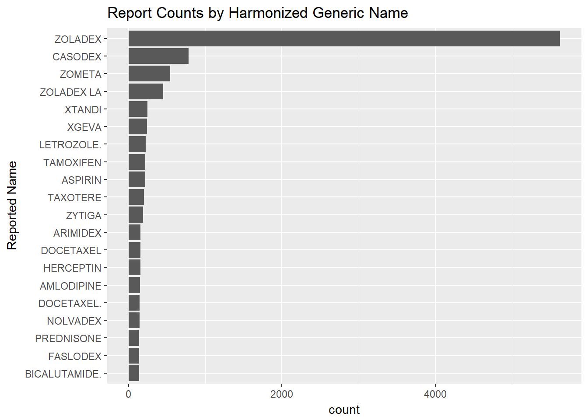

Single Drug Report (test)
# SET TARGET DRUG NAME
target_drug_name = "Zoladex"# prep for query
target_drug_forquery = paste0('"', gsub("\\s+", "+", target_drug_name), '"')
ndc_info = getResults(createQuery(list(search = paste0(paste0(c("brand_name:", "generic_name:"), target_drug_forquery), collapse = "+")),
rootURL = "https://api.fda.gov/drug/ndc.json?"))
label_info = getResults(createQuery(list(search = paste0(paste0(c("openfda.brand_name:", "openfda.generic_name:"), target_drug_forquery), collapse = "+")),
rootURL = "https://api.fda.gov/drug/label.json?"))
print(label_info)## effective_time
## 1 20190815
## drug_interactions
## 1 7 DRUG INTERACTIONS No formal drug-drug interaction studies have been performed. No confirmed interactions have been reported between ZOLADEX and other drugs. None 7.1 Drug/Laboratory Test Interactions Administration of ZOLADEX in therapeutic doses results in suppression of the pituitary-gonadal system. Because of this suppression, diagnostic tests of pituitary-gonadotropic and gonadal functions conducted during treatment and until the resumption of menses may show results which are misleading. Normal function is usually restored within 12 weeks after treatment is discontinued.
## geriatric_use
## 1 8.5 Geriatric Use There is no need for any dosage adjustment when administering ZOLADEX to male geriatric patients. ZOLADEX has not been studied in women over 65 years.
## pharmacodynamics
## 1 12.2 Pharmacodynamics Following initial administration in males, ZOLADEX causes an initial increase in serum luteinizing hormone (LH) and follicle stimulating hormone (FSH) levels with subsequent increases in serum levels of testosterone. Chronic administration of ZOLADEX leads to sustained suppression of pituitary gonadotropins, and serum levels of testosterone consequently fall into the range normally seen in surgically castrated men approximately 2-4 weeks after initiation of therapy. This leads to accessory sex organ regression. In clinical trials with follow-up of more than 2 years, suppression of serum testosterone to castrate levels has been maintained for the duration of therapy. In females, a similar down-regulation of the pituitary gland by chronic exposure to ZOLADEX leads to suppression of gonadotropin secretion, a decrease in serum estradiol to levels consistent with the postmenopausal state, and would be expected to lead to a reduction of ovarian size and function, reduction in the size of the uterus and mammary gland, as well as a regression of sex hormone-responsive tumors, if present. Serum estradiol is suppressed to levels similar to those observed in postmenopausal women within 3 weeks following initial administration; however, after suppression was attained, isolated elevations of estradiol were seen in 10% of the patients enrolled in clinical trials. Serum LH and FSH are suppressed to follicular phase levels within four weeks after initial administration of drug and are usually maintained at that range with continued use of ZOLADEX. In 5% or less of women treated with ZOLADEX, FSH and LH levels may not be suppressed to follicular phase levels on day 28 post treatment with use of a single 3.6 mg depot injection. In certain individuals, suppression of any of these hormones to such levels may not be achieved with ZOLADEX. Estradiol, LH and FSH levels return to pretreatment values within 12 weeks following the last implant administration in all but rare cases.
## description
## 1 11 DESCRIPTION ZOLADEX (goserelin acetate implant) is a GnRH agonist. Goserelin acetate is chemically described as an acetate salt of [D-Ser(But)6,Azgly10]. Its chemical structure is pyro-Glu-His-Trp-Ser-Tyr-D-Ser(But)-Leu-Arg-Pro-Azgly-NH2 acetate [C59H84N18O14 (C2H4O2)x where x = 1 to 2.4]. Goserelin acetate is an off-white powder with a molecular weight of 1269 Daltons (free base). It is freely soluble in glacial acetic acid. It is soluble in water, 0.1M hydrochloric acid, 0.1M sodium hydroxide, dimethylformamide and dimethyl sulfoxide. Goserelin acetate is practically insoluble in acetone, chloroform and ether. ZOLADEX is supplied as a sterile, biodegradable product containing goserelin acetate equivalent to 3.6 mg of goserelin. ZOLADEX is designed for subcutaneous injection with continuous release over a 28-day period. Goserelin acetate is dispersed in a matrix of D,L-lactic and glycolic acids copolymer (13.3-14.3 mg/dose) containing less than 2.5% acetic acid and up to 12% goserelin-related substances and presented as a sterile, white to cream colored 1-mm diameter cylinder, preloaded in a special single use syringe with a 16-gauge x 36 +/- 0.5 mm siliconized needle with protective needle sleeve (SafeSystem® Syringe) in a sealed, light- and moisture-proof, aluminum foil laminate pouch containing a desiccant capsule. Studies of the D,L-lactic and glycolic acids copolymer have indicated that it is completely biodegradable and has no demonstrable antigenic potential.
## nonclinical_toxicology
## 1 13 NONCLINICAL TOXICOLOGY 13.1 Carcinogenesis, Mutagenesis, Impairment of Fertility Subcutaneous implantation of goserelin in male and female rats once every 4 weeks for 1 year and recovery for 23 weeks at doses of about 80 and 150 mcg/kg (males) and 50 and 100 mcg/kg (females) daily resulted in an increased incidence of pituitary adenomas. An increased incidence of pituitary adenomas was also observed following subcutaneous implant of goserelin in rats at similar dose levels for a period of 72 weeks in males and 101 weeks in females. The relevance of the rat pituitary adenomas to humans has not been established. Subcutaneous implants of goserelin every 3 weeks for 2 years delivered to mice at doses of up to 2400 mcg/kg/day resulted in an increased incidence of histiocytic sarcoma of the vertebral column and femur. Human dose/exposure multiples could not be calculated from available animal data. Mutagenicity tests using bacterial and mammalian systems for point mutations and cytogenetic effects have provided no evidence for mutagenic potential. Administration of goserelin led to changes that were consistent with gonadal suppression in both male and female rats as a result of its endocrine action. In male rats administered 500-1000 mcg/kg/day, a decrease in weight and atrophic histological changes were observed in the testes, epididymis, seminal vesicle and prostate gland with complete suppression of spermatogenesis. In female rats administered 50-1000 mcg/kg/day, suppression of ovarian function led to decreased size and weight of ovaries and secondary sex organs; follicular development was arrested at the antral stage and the corpora lutea were reduced in size and number. Except for the testes, almost complete histologic reversal of these effects in males and females was observed several weeks after dosing was stopped; however, fertility and general reproductive performance were reduced in those that became pregnant after goserelin was discontinued. Fertile matings occurred within 2 weeks after cessation of dosing, even though total recovery of reproductive function may not have occurred before mating took place; and, the ovulation rate, the corresponding implantation rate, and number of live fetuses were reduced. Based on histological examination, drug effects on reproductive organs were reversible in male and female dogs administered 107-214 mcg/kg/day goserelin when drug treatment was stopped after continuous administration for 1 year. Human dose/exposure multiples could not be calculated from available animal data.
## dosage_forms_and_strengths
## 1 3 DOSAGE FORMS AND STRENGTHS ZOLADEX is supplied as a sterile and totally biodegradable D,L-lactic and glycolic acids copolymer (13.3-14.3 mg/dose) impregnated with goserelin acetate equivalent to 3.6 mg of goserelin in a disposable syringe device fitted with a 16-gauge x 36 +/- 0.5 mm siliconized hypodermic needle with protective needle sleeve [SafeSystem® Syringe] (NDC 70720-950-36). Implant 3.6 mg (3)
## clinical_pharmacology_table
## 1 <table ID="t7" width="100%"> <caption>Table 7 PHARMACOKINETIC PARAMETER ESTIMATES </caption> <col width="50.00%" align="left"/> <col width="25.00%" align="left"/> <col width="25.00%" align="left"/> <tbody> <tr> <td align="left" valign="middle" styleCode="Toprule Botrule Lrule Rrule"> <content styleCode="bold">Parameter (units)</content> </td> <td align="center" valign="middle" styleCode="Toprule Botrule Lrule Rrule"> <content styleCode="bold">Males n=7</content> </td> <td align="center" valign="middle" styleCode="Toprule Botrule Lrule Rrule"> <content styleCode="bold">Females n=9</content> </td> </tr> <tr> <td align="left" valign="top" styleCode="Botrule Lrule Rrule">Peak Plasma Concentration (ng/mL) </td> <td align="center" valign="top" styleCode="Botrule Rrule">2.84 ± 1.81 </td> <td align="center" valign="top" styleCode="Botrule Rrule">1.46 ± 0.82 </td> </tr> <tr> <td align="left" valign="top" styleCode="Botrule Lrule Rrule">Time to Peak Concentration (days) </td> <td align="center" valign="top" styleCode="Botrule Rrule">12-15 </td> <td align="center" valign="top" styleCode="Botrule Rrule">8-22 </td> </tr> <tr> <td align="left" valign="top" styleCode="Botrule Lrule Rrule">Area Under the Curve (0-28 days) (ng.d/mL) </td> <td align="center" valign="top" styleCode="Botrule Rrule">27.8 ± 15.3 </td> <td align="center" valign="top" styleCode="Botrule Rrule">18.5 ± 10.3 </td> </tr> <tr> <td align="left" valign="top" styleCode="Botrule Lrule Rrule">Systemic Clearance (mL/min) </td> <td align="center" valign="top" styleCode="Botrule Rrule">110.5 ± 47.5 </td> <td align="center" valign="top" styleCode="Botrule Rrule">163.9 ± 71.0 </td> </tr> </tbody> </table>
## mechanism_of_action
## 1 12.1 Mechanism of Action ZOLADEX is a synthetic decapeptide analogue of GnRH. ZOLADEX acts as an inhibitor of pituitary gonadotropin secretion when administered in the biodegradable formulation. In animal and in vitro studies, administration of goserelin resulted in the regression or inhibition of growth of the hormonally sensitive dimethylbenzanthracene (DMBA)-induced rat mammary tumor and Dunning R3327 prostate tumor.
## pharmacokinetics_table
## 1 <table ID="t7" width="100%"> <caption>Table 7 PHARMACOKINETIC PARAMETER ESTIMATES </caption> <col width="50.00%" align="left"/> <col width="25.00%" align="left"/> <col width="25.00%" align="left"/> <tbody> <tr> <td align="left" valign="middle" styleCode="Toprule Botrule Lrule Rrule"> <content styleCode="bold">Parameter (units)</content> </td> <td align="center" valign="middle" styleCode="Toprule Botrule Lrule Rrule"> <content styleCode="bold">Males n=7</content> </td> <td align="center" valign="middle" styleCode="Toprule Botrule Lrule Rrule"> <content styleCode="bold">Females n=9</content> </td> </tr> <tr> <td align="left" valign="top" styleCode="Botrule Lrule Rrule">Peak Plasma Concentration (ng/mL) </td> <td align="center" valign="top" styleCode="Botrule Rrule">2.84 ± 1.81 </td> <td align="center" valign="top" styleCode="Botrule Rrule">1.46 ± 0.82 </td> </tr> <tr> <td align="left" valign="top" styleCode="Botrule Lrule Rrule">Time to Peak Concentration (days) </td> <td align="center" valign="top" styleCode="Botrule Rrule">12-15 </td> <td align="center" valign="top" styleCode="Botrule Rrule">8-22 </td> </tr> <tr> <td align="left" valign="top" styleCode="Botrule Lrule Rrule">Area Under the Curve (0-28 days) (ng.d/mL) </td> <td align="center" valign="top" styleCode="Botrule Rrule">27.8 ± 15.3 </td> <td align="center" valign="top" styleCode="Botrule Rrule">18.5 ± 10.3 </td> </tr> <tr> <td align="left" valign="top" styleCode="Botrule Lrule Rrule">Systemic Clearance (mL/min) </td> <td align="center" valign="top" styleCode="Botrule Rrule">110.5 ± 47.5 </td> <td align="center" valign="top" styleCode="Botrule Rrule">163.9 ± 71.0 </td> </tr> </tbody> </table>
## pharmacokinetics
## 1 12.3 Pharmacokinetics The pharmacokinetics of ZOLADEX have been determined in both male and female healthy volunteers and patients. In these studies, ZOLADEX was administered as a single 250 mcg (aqueous solution) dose and as a single or multiple 3.6 mg depot dose by subcutaneous route. Absorption The absorption of radiolabeled drug was rapid, and the peak blood radioactivity levels occurred between 0.5 and 1.0 hour after dosing. The mean (± standard deviation) pharmacokinetic parameter estimates of ZOLADEX after administration of 3.6 mg depot for 2 months in males and females are presented in the following table. Table 7 PHARMACOKINETIC PARAMETER ESTIMATES Parameter (units) Males n=7 Females n=9 Peak Plasma Concentration (ng/mL) 2.84 ± 1.81 1.46 ± 0.82 Time to Peak Concentration (days) 12-15 8-22 Area Under the Curve (0-28 days) (ng.d/mL) 27.8 ± 15.3 18.5 ± 10.3 Systemic Clearance (mL/min) 110.5 ± 47.5 163.9 ± 71.0 Goserelin is released from the depot at a much slower rate initially for the first 8 days, and then there is more rapid and continuous release for the remainder of the 28-day dosing period. Despite the change in the releasing rate of goserelin, administration of ZOLADEX every 28 days resulted in testosterone levels that were suppressed to and maintained in the range normally seen in surgically castrated men. When ZOLADEX 3.6 mg depot was used for treating male and female patients with normal renal and hepatic function, there was no significant evidence of drug accumulation. However, in clinical trials the minimum serum levels of a few patients were increased. These levels can be attributed to interpatient variation. Distribution The apparent volumes of distribution determined after subcutaneous administration of 250 mcg aqueous solution of goserelin were 44.1 and 20.3 liters for males and females, respectively. The plasma protein binding of goserelin obtained from one sample was found to be 27.3%. Metabolism Metabolism of goserelin, by hydrolysis of the C-terminal amino acids, is the major clearance mechanism. The major circulating component in serum appeared to be 1–7 fragment, and the major component presented in urine of one healthy male volunteer was 5-10 fragment. The metabolism of goserelin in humans yields a similar but narrow profile of metabolites to that found in other species. All metabolites found in humans have also been found in toxicology species. Excretion Clearance of goserelin following subcutaneous administration of the solution formulation of goserelin is very rapid and occurs via a combination of hepatic metabolism and urinary excretion. More than 90% of a subcutaneous radiolabeled solution formulation dose of goserelin is excreted in urine. Approximately 20% of the dose in urine is accounted for by unchanged goserelin. The total body clearance of goserelin (administered subcutaneously as a 3.6 mg depot) was significantly (p<0.05) greater (163.9 versus 110.5 L/min) in females compared to males.
## clinical_studies_table
## 1 <table ID="t8" width="100%"> <caption>Table 8 OBJECTIVE RESPONSE BY ER STATUS </caption> <col width="32.0%" align="left"/> <col width="37.0%" align="left"/> <col width="31.0%" align="left"/> <tbody> <tr> <td align="left" valign="top" styleCode="Toprule Botrule Lrule Rrule"/> <td colspan="2" align="center" valign="top" styleCode="Toprule Botrule Lrule Rrule"> <content styleCode="bold">CR + PR/Total No. (%)</content> </td> </tr> <tr> <td align="left" valign="top" styleCode="Toprule Botrule Lrule Rrule"> <content styleCode="bold">ER Status</content> </td> <td align="center" valign="top" styleCode="Toprule Botrule Lrule Rrule"> <content styleCode="bold">Phase II (N=228)</content> </td> <td align="center" valign="top" styleCode="Toprule Botrule Lrule Rrule"> <content styleCode="bold">Trial 2302 (N=159)</content> </td> </tr> <tr> <td align="left" valign="top" styleCode="Botrule Lrule Rrule">Positive </td> <td align="center" valign="top" styleCode="Botrule Rrule">43/119 (36) </td> <td align="center" valign="top" styleCode="Botrule Rrule">31/86 (36) </td> </tr> <tr> <td align="left" valign="top" styleCode="Botrule Lrule Rrule">Negative </td> <td align="center" valign="top" styleCode="Botrule Rrule">6/33 (18) </td> <td align="center" valign="top" styleCode="Botrule Rrule">3/26 (10) </td> </tr> <tr> <td align="left" valign="top" styleCode="Botrule Lrule Rrule">Unknown </td> <td align="center" valign="top" styleCode="Botrule Rrule">20/76 (26) </td> <td align="center" valign="top" styleCode="Botrule Rrule">18/44 (41) </td> </tr> </tbody> </table>
## indications_and_usage
## 1 1 INDICATIONS AND USAGE ZOLADEX is a Gonadotropin Releasing Hormone (GnRH) agonist indicated for: Use in combination with flutamide for the management of locally confined carcinoma of the prostate (1.1) Palliative treatment of advanced carcinoma of the prostate (1.2) The management of endometriosis (1.3) Use as an endometrial-thinning agent prior to endometrial ablation for dysfunctional uterine bleeding (1.4) Use in the palliative treatment of advanced breast cancer in pre- and perimenopausal women (1.5) 1.1 Stage B2-C Prostatic Carcinoma ZOLADEX is indicated for use in combination with flutamide for the management of locally confined Stage T2b-T4 (Stage B2-C) carcinoma of the prostate. Treatment with ZOLADEX and flutamide should start 8 weeks prior to initiating radiation therapy and continue during radiation therapy [see Dosage and Administration (2.1) and Clinical Studies (14.1)]. 1.2 Prostatic Carcinoma ZOLADEX is indicated in the palliative treatment of advanced carcinoma of the prostate [see Dosage and Administration (2.2) and Clinical Studies (14.2)]. 1.3 Endometriosis ZOLADEX is indicated for the management of endometriosis, including pain relief and reduction of endometriotic lesions for the duration of therapy. Experience with ZOLADEX for the management of endometriosis has been limited to women 18 years of age and older treated for 6 months [see Dosage and Administration (2.3) and Clinical Studies (14.3)]. 1.4 Endometrial Thinning ZOLADEX is indicated for use as an endometrial-thinning agent prior to endometrial ablation for dysfunctional uterine bleeding [see Dosage and Administration (2.4) and Clinical Studies (14.4)]. 1.5 Advanced Breast Cancer ZOLADEX is indicated for use in the palliative treatment of advanced breast cancer in pre- and perimenopausal women. The estrogen and progesterone receptor values may help to predict whether ZOLADEX therapy is likely to be beneficial [see Dosage and Administration (2.5), Clinical Pharmacology (12.1), and Clinical Studies (14.5)]. The automatic safety feature of the syringe aids in the prevention of needlestick injury.
## set_id
## 1 294b168b-6e5f-4db9-bf70-d599271458b3
## id
## 1 a3d51764-2f2b-4aca-aca0-5cd87b673f75
## pediatric_use
## 1 8.4 Pediatric Use Safety and effectiveness in pediatric patients have not been established.
## contraindications
## 1 4 CONTRAINDICATIONS Hypersensitivity (4.1) Pregnancy unless used for treatment of advanced breast cancer (4.2) 4.1 Hypersensitivity Anaphylactic reactions to ZOLADEX have been reported in the medical literature. ZOLADEX is contraindicated in those patients who have a known hypersensitivity to GnRH, GnRH agonist analogues or any of the components in ZOLADEX [see Warnings and Precautions (5.6)]. 4.2 Pregnancy ZOLADEX is contraindicated during pregnancy unless ZOLADEX is being used for palliative treatment of advanced breast cancer. ZOLADEX can cause fetal harm when administered to a pregnant woman. If this drug is used during pregnancy, the patient should be apprised of the potential hazard to the fetus. There is an increased risk for pregnancy loss due to expected hormone changes that occur with ZOLADEX treatment [see Use in Specific Populations (8.1)].
## pregnancy
## 1 8.1 Pregnancy ZOLADEX is contraindicated during pregnancy unless ZOLADEX is being used for palliative treatment of advanced breast cancer. There are no adequate and well-controlled studies in pregnant women using ZOLADEX. Based on mechanism of action in humans and findings of increased pregnancy loss in animal studies, ZOLADEX can cause fetal harm when administered to a pregnant woman. If this drug is used during pregnancy, the patient should be apprised of the potential hazard to the fetus. There is an increased risk for pregnancy loss due to expected hormone changes that occur with ZOLADEX treatment. ZOLADEX crosses the placenta in rats and rabbits following subcutaneous administration. Administration of goserelin to pregnant rats and rabbits during organogenesis resulted in increased preimplantation loss and increased resorptions. When pregnant rats received goserelin throughout gestation and lactation, there was a dose-related increase in umbilical hernia in offspring. In additional reproduction studies in rats, goserelin decreased fetus and pup survival. Human dose/exposure multiples could not be calculated from available animal data. Actual animal doses: rat (= 2 mcg/kg/day for pregnancy loss; > 10 mcg/kg/day for umbilical hernia in offspring); rabbits (> 20 mcg/kg/day).
## nursing_mothers
## 1 8.3 Nursing Mothers It is not known if goserelin is excreted in human milk. Goserelin is excreted in the milk of lactating rats. Because many drugs are excreted in human milk and because of the potential for serious adverse reactions in nursing infants from ZOLADEX, a decision should be made to either discontinue nursing or discontinue the drug, taking into account the importance of the drug to the mother.
## spl_product_data_elements
## 1 ZOLADEX goserelin acetate goserelin acetate goserelin Glycolic Acid Lactic Acid, DL-
## adverse_reactions_table
## 1 <table ID="t1" width="100%"> <caption>Table 1 ADVERSE EVENTS DURING ACUTE RADIATION THERAPY (within first 90 days of radiation therapy) </caption> <col width="31.167%" align="left"/> <col width="37.767%" align="left"/> <col width="31.067%" align="left"/> <tbody> <tr> <td align="left" valign="top" styleCode="Toprule Botrule Lrule Rrule"/> <td align="center" valign="middle" styleCode="Toprule Botrule Rrule"> <content styleCode="bold">(n=231) flutamide + ZOLADEX + Radiation</content> </td> <td align="center" valign="middle" styleCode="Toprule Botrule Rrule"> <content styleCode="bold">(n=235) Radiation Only</content> </td> </tr> <tr> <td align="left" valign="top" styleCode="Toprule Botrule Lrule Rrule"/> <td align="center" valign="middle" styleCode="Toprule Botrule Rrule"> <content styleCode="bold">% All</content> </td> <td align="center" valign="middle" styleCode="Toprule Botrule Rrule"> <content styleCode="bold">% All</content> </td> </tr> <tr> <td align="left" valign="top" styleCode="Botrule Lrule Rrule">Rectum/Large Bowel </td> <td align="center" valign="top" styleCode="Botrule Rrule">80 </td> <td align="center" valign="top" styleCode="Botrule Rrule">76 </td> </tr> <tr> <td align="left" valign="top" styleCode="Botrule Lrule Rrule">Bladder </td> <td align="center" valign="top" styleCode="Botrule Rrule">58 </td> <td align="center" valign="top" styleCode="Botrule Rrule">60 </td> </tr> <tr> <td align="left" valign="top" styleCode="Botrule Lrule Rrule">Skin </td> <td align="center" valign="top" styleCode="Botrule Rrule">37 </td> <td align="center" valign="top" styleCode="Botrule Rrule">37 </td> </tr> </tbody> </table>, <table ID="t2" width="100%"> <caption>Table 2 ADVERSE EVENTS DURING LATE RADIATION PHASE (after 90 days of radiation therapy) </caption> <col width="26.667%" align="left"/> <col width="41.667%" align="left"/> <col width="31.667%" align="left"/> <tbody> <tr> <td align="left" valign="top" styleCode="Toprule Botrule Lrule Rrule"/> <td align="center" valign="middle" styleCode="Toprule Botrule Rrule"> <content styleCode="bold">(n=231) flutamide + ZOLADEX + Radiation</content> </td> <td align="center" valign="middle" styleCode="Toprule Botrule Rrule"> <content styleCode="bold">(n=235) Radiation Only</content> </td> </tr> <tr> <td align="left" valign="top" styleCode="Toprule Botrule Lrule Rrule"/> <td align="center" valign="middle" styleCode="Toprule Botrule Rrule"> <content styleCode="bold">% All</content> </td> <td align="center" valign="middle" styleCode="Toprule Botrule Rrule"> <content styleCode="bold">% All</content> </td> </tr> <tr> <td align="left" valign="top" styleCode="Botrule Lrule Rrule">Diarrhea </td> <td align="center" valign="top" styleCode="Botrule Rrule">36 </td> <td align="center" valign="top" styleCode="Botrule Rrule">40 </td> </tr> <tr> <td align="left" valign="top" styleCode="Botrule Lrule Rrule">Cystitis </td> <td align="center" valign="top" styleCode="Botrule Rrule">16 </td> <td align="center" valign="top" styleCode="Botrule Rrule">16 </td> </tr> <tr> <td align="left" valign="top" styleCode="Botrule Lrule Rrule">Rectal Bleeding </td> <td align="center" valign="top" styleCode="Botrule Rrule">14 </td> <td align="center" valign="top" styleCode="Botrule Rrule">20 </td> </tr> <tr> <td align="left" valign="top" styleCode="Botrule Lrule Rrule">Proctitis </td> <td align="center" valign="top" styleCode="Botrule Rrule">8 </td> <td align="center" valign="top" styleCode="Botrule Rrule">8 </td> </tr> <tr> <td align="left" valign="top" styleCode="Botrule Lrule Rrule">Hematuria </td> <td align="center" valign="top" styleCode="Botrule Rrule">7 </td> <td align="center" valign="top" styleCode="Botrule Rrule">12 </td> </tr> </tbody> </table>, <table ID="t3" width="100%"> <caption>Table 3 TREATMENT RECEIVED </caption> <col width="50.000%" align="left"/> <col width="20.000%" align="left"/> <col width="30.000%" align="left"/> <tfoot> <tr> <td colspan="4" align="left" valign="top"> <paragraph styleCode="footnote">1. Complications related to surgery were reported in 18% of the orchiectomy patients, while only 3% of ZOLADEX patients reported adverse reactions at the injection site. The surgical complications included scrotal infection (5.9%), groin pain (4.7%), wound seepage (3.1%), scrotal hematoma (2.8%), incisional discomfort (1.6%) and skin necrosis (1.2%). </paragraph> </td> </tr> </tfoot> <tbody> <tr> <td align="left" valign="middle" styleCode="Toprule Botrule Lrule Rrule"> <content styleCode="bold"/> </td> <td align="center" valign="middle" styleCode="Toprule Botrule Rrule"> <content styleCode="bold">ZOLADEX (n=242)</content> </td> <td align="center" valign="middle" styleCode="Toprule Botrule Rrule"> <content styleCode="bold">ORCHIECTOMY (n=254)</content> </td> </tr> <tr> <td align="left" valign="middle" styleCode="Toprule Botrule Lrule Rrule"> <content styleCode="bold">ADVERSE EVENT</content> </td> <td align="center" valign="middle" styleCode="Toprule Botrule Rrule"> <content styleCode="bold">%</content> </td> <td align="center" valign="middle" styleCode="Toprule Botrule Rrule"> <content styleCode="bold">%</content> </td> </tr> <tr> <td align="left" valign="middle" styleCode="Botrule Lrule Rrule">Hot Flashes </td> <td align="center" valign="middle" styleCode="Botrule Rrule">62 </td> <td align="center" valign="middle" styleCode="Botrule Rrule">53 </td> </tr> <tr> <td align="left" valign="middle" styleCode="Botrule Lrule Rrule">Sexual Dysfunction </td> <td align="center" valign="middle" styleCode="Botrule Rrule">21 </td> <td align="center" valign="middle" styleCode="Botrule Rrule">15 </td> </tr> <tr> <td align="left" valign="middle" styleCode="Botrule Lrule Rrule">Decreased Erections </td> <td align="center" valign="middle" styleCode="Botrule Rrule">18 </td> <td align="center" valign="middle" styleCode="Botrule Rrule">16 </td> </tr> <tr> <td align="left" valign="middle" styleCode="Botrule Lrule Rrule">Lower Urinary Tract Symptoms </td> <td align="center" valign="middle" styleCode="Botrule Rrule">13 </td> <td align="center" valign="middle" styleCode="Botrule Rrule">8 </td> </tr> <tr> <td align="left" valign="middle" styleCode="Botrule Lrule Rrule">Lethargy </td> <td align="center" valign="middle" styleCode="Botrule Rrule">8 </td> <td align="center" valign="middle" styleCode="Botrule Rrule">4 </td> </tr> <tr> <td align="left" valign="middle" styleCode="Botrule Lrule Rrule">Pain (worsened in the first 30 days) </td> <td align="center" valign="middle" styleCode="Botrule Rrule">8 </td> <td align="center" valign="middle" styleCode="Botrule Rrule">3 </td> </tr> <tr> <td align="left" valign="middle" styleCode="Botrule Lrule Rrule">Edema </td> <td align="center" valign="middle" styleCode="Botrule Rrule">7 </td> <td align="center" valign="middle" styleCode="Botrule Rrule">8 </td> </tr> <tr> <td align="left" valign="middle" styleCode="Botrule Lrule Rrule">Upper Respiratory Infection </td> <td align="center" valign="middle" styleCode="Botrule Rrule">7 </td> <td align="center" valign="middle" styleCode="Botrule Rrule">2 </td> </tr> <tr> <td align="left" valign="middle" styleCode="Botrule Lrule Rrule">Rash </td> <td align="center" valign="middle" styleCode="Botrule Rrule">6 </td> <td align="center" valign="middle" styleCode="Botrule Rrule">1 </td> </tr> <tr> <td align="left" valign="middle" styleCode="Botrule Lrule Rrule">Sweating </td> <td align="center" valign="middle" styleCode="Botrule Rrule">6 </td> <td align="center" valign="middle" styleCode="Botrule Rrule">4 </td> </tr> <tr> <td align="left" valign="middle" styleCode="Botrule Lrule Rrule">Anorexia </td> <td align="center" valign="middle" styleCode="Botrule Rrule">5 </td> <td align="center" valign="middle" styleCode="Botrule Rrule">2 </td> </tr> <tr> <td align="left" valign="middle" styleCode="Botrule Lrule Rrule">Chronic Obstructive Pulmonary Disease </td> <td align="center" valign="middle" styleCode="Botrule Rrule">5 </td> <td align="center" valign="middle" styleCode="Botrule Rrule">3 </td> </tr> <tr> <td align="left" valign="middle" styleCode="Botrule Lrule Rrule">Congestive Heart Failure </td> <td align="center" valign="middle" styleCode="Botrule Rrule">5 </td> <td align="center" valign="middle" styleCode="Botrule Rrule">1 </td> </tr> <tr> <td align="left" valign="middle" styleCode="Botrule Lrule Rrule">Dizziness </td> <td align="center" valign="middle" styleCode="Botrule Rrule">5 </td> <td align="center" valign="middle" styleCode="Botrule Rrule">4 </td> </tr> <tr> <td align="left" valign="middle" styleCode="Botrule Lrule Rrule">Insomnia </td> <td align="center" valign="middle" styleCode="Botrule Rrule">5 </td> <td align="center" valign="middle" styleCode="Botrule Rrule">1 </td> </tr> <tr> <td align="left" valign="middle" styleCode="Botrule Lrule Rrule">Nausea </td> <td align="center" valign="middle" styleCode="Botrule Rrule">5 </td> <td align="center" valign="middle" styleCode="Botrule Rrule">2 </td> </tr> <tr> <td align="left" valign="middle" styleCode="Botrule Lrule Rrule">Complications of Surgery </td> <td align="center" valign="middle" styleCode="Botrule Rrule">0 </td> <td align="center" valign="middle" styleCode="Botrule Rrule">18<sup>1</sup> </td> </tr> </tbody> </table>, <table ID="t4" width="100%"> <caption>Table 4 TREATMENT RECEIVED </caption> <col width="50.000%" align="left"/> <col width="25.000%" align="left"/> <col width="35.000%" align="left"/> <tbody> <tr> <td align="left" valign="middle" styleCode="Toprule Botrule Lrule Rrule"> <content styleCode="bold"/> </td> <td align="center" valign="middle" styleCode="Toprule Botrule Rrule"> <content styleCode="bold">ZOLADEX (n=411)</content> </td> <td align="center" valign="middle" styleCode="Toprule Botrule Rrule"> <content styleCode="bold">DANAZOL (n=207)</content> </td> </tr> <tr> <td align="left" valign="middle" styleCode="Toprule Botrule Lrule Rrule"> <content styleCode="bold">ADVERSE EVENT</content> </td> <td align="center" valign="middle" styleCode="Toprule Botrule Rrule"> <content styleCode="bold">%</content> </td> <td align="center" valign="middle" styleCode="Toprule Botrule Rrule"> <content styleCode="bold">%</content> </td> </tr> <tr> <td align="left" valign="middle" styleCode="Botrule Lrule Rrule">Hot Flushes </td> <td align="center" valign="middle" styleCode="Botrule Rrule">96 </td> <td align="center" valign="middle" styleCode="Botrule Rrule">67 </td> </tr> <tr> <td align="left" valign="middle" styleCode="Botrule Lrule Rrule">Vaginitis </td> <td align="center" valign="middle" styleCode="Botrule Rrule">75 </td> <td align="center" valign="middle" styleCode="Botrule Rrule">43 </td> </tr> <tr> <td align="left" valign="middle" styleCode="Botrule Lrule Rrule">Headache </td> <td align="center" valign="middle" styleCode="Botrule Rrule">75 </td> <td align="center" valign="middle" styleCode="Botrule Rrule">63 </td> </tr> <tr> <td align="left" valign="middle" styleCode="Botrule Lrule Rrule">Emotional Lability </td> <td align="center" valign="middle" styleCode="Botrule Rrule">60 </td> <td align="center" valign="middle" styleCode="Botrule Rrule">56 </td> </tr> <tr> <td align="left" valign="middle" styleCode="Botrule Lrule Rrule">Libido Decreased </td> <td align="center" valign="middle" styleCode="Botrule Rrule">61 </td> <td align="center" valign="middle" styleCode="Botrule Rrule">44 </td> </tr> <tr> <td align="left" valign="middle" styleCode="Botrule Lrule Rrule">Sweating </td> <td align="center" valign="middle" styleCode="Botrule Rrule">45 </td> <td align="center" valign="middle" styleCode="Botrule Rrule">30 </td> </tr> <tr> <td align="left" valign="middle" styleCode="Botrule Lrule Rrule">Depression </td> <td align="center" valign="middle" styleCode="Botrule Rrule">54 </td> <td align="center" valign="middle" styleCode="Botrule Rrule">48 </td> </tr> <tr> <td align="left" valign="middle" styleCode="Botrule Lrule Rrule">Acne </td> <td align="center" valign="middle" styleCode="Botrule Rrule">42 </td> <td align="center" valign="middle" styleCode="Botrule Rrule">55 </td> </tr> <tr> <td align="left" valign="middle" styleCode="Botrule Lrule Rrule">Breast Atrophy </td> <td align="center" valign="middle" styleCode="Botrule Rrule">33 </td> <td align="center" valign="middle" styleCode="Botrule Rrule">42 </td> </tr> <tr> <td align="left" valign="middle" styleCode="Botrule Lrule Rrule">Seborrhea </td> <td align="center" valign="middle" styleCode="Botrule Rrule">26 </td> <td align="center" valign="middle" styleCode="Botrule Rrule">52 </td> </tr> <tr> <td align="left" valign="middle" styleCode="Botrule Lrule Rrule">Peripheral Edema </td> <td align="center" valign="middle" styleCode="Botrule Rrule">21 </td> <td align="center" valign="middle" styleCode="Botrule Rrule">34 </td> </tr> <tr> <td align="left" valign="middle" styleCode="Botrule Lrule Rrule">Breast Enlargement </td> <td align="center" valign="middle" styleCode="Botrule Rrule">18 </td> <td align="center" valign="middle" styleCode="Botrule Rrule">15 </td> </tr> <tr> <td align="left" valign="middle" styleCode="Botrule Lrule Rrule">Pelvic Symptoms </td> <td align="center" valign="middle" styleCode="Botrule Rrule">18 </td> <td align="center" valign="middle" styleCode="Botrule Rrule">23 </td> </tr> <tr> <td align="left" valign="middle" styleCode="Botrule Lrule Rrule">Pain </td> <td align="center" valign="middle" styleCode="Botrule Rrule">17 </td> <td align="center" valign="middle" styleCode="Botrule Rrule">16 </td> </tr> <tr> <td align="left" valign="middle" styleCode="Botrule Lrule Rrule">Dyspareunia </td> <td align="center" valign="middle" styleCode="Botrule Rrule">14 </td> <td align="center" valign="middle" styleCode="Botrule Rrule">5 </td> </tr> <tr> <td align="left" valign="middle" styleCode="Botrule Lrule Rrule">Libido Increased </td> <td align="center" valign="middle" styleCode="Botrule Rrule">12 </td> <td align="center" valign="middle" styleCode="Botrule Rrule">19 </td> </tr> <tr> <td align="left" valign="middle" styleCode="Botrule Lrule Rrule">Infection </td> <td align="center" valign="middle" styleCode="Botrule Rrule">13 </td> <td align="center" valign="middle" styleCode="Botrule Rrule">11 </td> </tr> <tr> <td align="left" valign="middle" styleCode="Botrule Lrule Rrule">Asthenia </td> <td align="center" valign="middle" styleCode="Botrule Rrule">11 </td> <td align="center" valign="middle" styleCode="Botrule Rrule">13 </td> </tr> <tr> <td align="left" valign="middle" styleCode="Botrule Lrule Rrule">Nausea </td> <td align="center" valign="middle" styleCode="Botrule Rrule">8 </td> <td align="center" valign="middle" styleCode="Botrule Rrule">14 </td> </tr> <tr> <td align="left" valign="middle" styleCode="Botrule Lrule Rrule">Hirsutism </td> <td align="center" valign="middle" styleCode="Botrule Rrule">7 </td> <td align="center" valign="middle" styleCode="Botrule Rrule">15 </td> </tr> <tr> <td align="left" valign="middle" styleCode="Botrule Lrule Rrule">Insomnia </td> <td align="center" valign="middle" styleCode="Botrule Rrule">11 </td> <td align="center" valign="middle" styleCode="Botrule Rrule">4 </td> </tr> <tr> <td align="left" valign="middle" styleCode="Botrule Lrule Rrule">Breast Pain </td> <td align="center" valign="middle" styleCode="Botrule Rrule">7 </td> <td align="center" valign="middle" styleCode="Botrule Rrule">4 </td> </tr> <tr> <td align="left" valign="middle" styleCode="Botrule Lrule Rrule">Abdominal Pain </td> <td align="center" valign="middle" styleCode="Botrule Rrule">7 </td> <td align="center" valign="middle" styleCode="Botrule Rrule">7 </td> </tr> <tr> <td align="left" valign="middle" styleCode="Botrule Lrule Rrule">Back Pain </td> <td align="center" valign="middle" styleCode="Botrule Rrule">7 </td> <td align="center" valign="middle" styleCode="Botrule Rrule">13 </td> </tr> <tr> <td align="left" valign="middle" styleCode="Botrule Lrule Rrule">Flu Syndrome </td> <td align="center" valign="middle" styleCode="Botrule Rrule">5 </td> <td align="center" valign="middle" styleCode="Botrule Rrule">5 </td> </tr> <tr> <td align="left" valign="middle" styleCode="Botrule Lrule Rrule">Dizziness </td> <td align="center" valign="middle" styleCode="Botrule Rrule">6 </td> <td align="center" valign="middle" styleCode="Botrule Rrule">4 </td> </tr> <tr> <td align="left" valign="middle" styleCode="Botrule Lrule Rrule">Application Site Reaction </td> <td align="center" valign="middle" styleCode="Botrule Rrule">6 </td> <td align="center" valign="middle" styleCode="Botrule Rrule">- </td> </tr> <tr> <td align="left" valign="middle" styleCode="Botrule Lrule Rrule">Voice Alterations </td> <td align="center" valign="middle" styleCode="Botrule Rrule">3 </td> <td align="center" valign="middle" styleCode="Botrule Rrule">8 </td> </tr> <tr> <td align="left" valign="middle" styleCode="Botrule Lrule Rrule">Pharyngitis </td> <td align="center" valign="middle" styleCode="Botrule Rrule">5 </td> <td align="center" valign="middle" styleCode="Botrule Rrule">2 </td> </tr> <tr> <td align="left" valign="middle" styleCode="Botrule Lrule Rrule">Hair Disorders </td> <td align="center" valign="middle" styleCode="Botrule Rrule">4 </td> <td align="center" valign="middle" styleCode="Botrule Rrule">11 </td> </tr> <tr> <td align="left" valign="middle" styleCode="Botrule Lrule Rrule">Myalgia </td> <td align="center" valign="middle" styleCode="Botrule Rrule">3 </td> <td align="center" valign="middle" styleCode="Botrule Rrule">11 </td> </tr> <tr> <td align="left" valign="middle" styleCode="Botrule Lrule Rrule">Nervousness </td> <td align="center" valign="middle" styleCode="Botrule Rrule">3 </td> <td align="center" valign="middle" styleCode="Botrule Rrule">5 </td> </tr> <tr> <td align="left" valign="middle" styleCode="Botrule Lrule Rrule">Weight Gain </td> <td align="center" valign="middle" styleCode="Botrule Rrule">3 </td> <td align="center" valign="middle" styleCode="Botrule Rrule">23 </td> </tr> <tr> <td align="left" valign="middle" styleCode="Botrule Lrule Rrule">Leg Cramps </td> <td align="center" valign="middle" styleCode="Botrule Rrule">2 </td> <td align="center" valign="middle" styleCode="Botrule Rrule">6 </td> </tr> <tr> <td align="left" valign="middle" styleCode="Botrule Lrule Rrule">Increased Appetite </td> <td align="center" valign="middle" styleCode="Botrule Rrule">2 </td> <td align="center" valign="middle" styleCode="Botrule Rrule">5 </td> </tr> <tr> <td align="left" valign="middle" styleCode="Botrule Lrule Rrule">Pruritus </td> <td align="center" valign="middle" styleCode="Botrule Rrule">2 </td> <td align="center" valign="middle" styleCode="Botrule Rrule">6 </td> </tr> <tr> <td align="left" valign="middle" styleCode="Botrule Lrule Rrule">Hypertonia </td> <td align="center" valign="middle" styleCode="Botrule Rrule">1 </td> <td align="center" valign="middle" styleCode="Botrule Rrule">10 </td> </tr> </tbody> </table>, <table ID="t5" width="100%"> <caption>Table 5 ADVERSE EVENTS REPORTED AT A FREQUENCY OF 5% OR GREATER IN ZOLADEX AND PLACEBO TREATMENT GROUPS OF TRIAL 0022 </caption> <col width="50.000%" align="left"/> <col width="25.000%" align="left"/> <col width="35.000%" align="left"/> <tbody> <tr> <td align="left" valign="middle" styleCode="Toprule Botrule Lrule Rrule"> <content styleCode="bold"/> </td> <td align="center" valign="middle" styleCode="Toprule Botrule Rrule"> <content styleCode="bold">ZOLADEX 3.6 mg (n=180)</content> </td> <td align="center" valign="middle" styleCode="Toprule Botrule Rrule"> <content styleCode="bold">Placebo (n=177)</content> </td> </tr> <tr> <td align="left" valign="middle" styleCode="Toprule Botrule Lrule Rrule"> <content styleCode="bold">ADVERSE EVENT</content> </td> <td align="center" valign="middle" styleCode="Toprule Botrule Rrule"> <content styleCode="bold">%</content> </td> <td align="center" valign="middle" styleCode="Toprule Botrule Rrule"> <content styleCode="bold">%</content> </td> </tr> <tr> <td align="left" valign="middle" styleCode="Botrule Lrule Rrule"> <content styleCode="bold">Whole Body</content> </td> <td align="center" valign="middle" styleCode="Botrule Rrule"/> <td align="center" valign="middle" styleCode="Botrule Rrule"/> </tr> <tr> <td align="left" valign="middle" styleCode="Botrule Lrule Rrule">Headache </td> <td align="center" valign="middle" styleCode="Botrule Rrule">32 </td> <td align="center" valign="middle" styleCode="Botrule Rrule">22 </td> </tr> <tr> <td align="left" valign="middle" styleCode="Botrule Lrule Rrule">Abdominal Pain </td> <td align="center" valign="middle" styleCode="Botrule Rrule">11 </td> <td align="center" valign="middle" styleCode="Botrule Rrule">10 </td> </tr> <tr> <td align="left" valign="middle" styleCode="Botrule Lrule Rrule">Pelvic Pain </td> <td align="center" valign="middle" styleCode="Botrule Rrule">9 </td> <td align="center" valign="middle" styleCode="Botrule Rrule">6 </td> </tr> <tr> <td align="left" valign="middle" styleCode="Botrule Lrule Rrule">Back Pain </td> <td align="center" valign="middle" styleCode="Botrule Rrule">4 </td> <td align="center" valign="middle" styleCode="Botrule Rrule">7 </td> </tr> <tr> <td align="left" valign="middle" styleCode="Botrule Lrule Rrule"> <content styleCode="bold">Cardiovascular</content> </td> <td align="center" valign="middle" styleCode="Botrule Rrule"/> <td align="center" valign="middle" styleCode="Botrule Rrule"/> </tr> <tr> <td align="left" valign="middle" styleCode="Botrule Lrule Rrule">Vasodilatation </td> <td align="center" valign="middle" styleCode="Botrule Rrule">57 </td> <td align="center" valign="middle" styleCode="Botrule Rrule">18 </td> </tr> <tr> <td align="left" valign="middle" styleCode="Botrule Lrule Rrule">Migraine </td> <td align="center" valign="middle" styleCode="Botrule Rrule">7 </td> <td align="center" valign="middle" styleCode="Botrule Rrule">4 </td> </tr> <tr> <td align="left" valign="middle" styleCode="Botrule Lrule Rrule">Hypertension </td> <td align="center" valign="middle" styleCode="Botrule Rrule">6 </td> <td align="center" valign="middle" styleCode="Botrule Rrule">2 </td> </tr> <tr> <td align="left" valign="middle" styleCode="Botrule Lrule Rrule"> <content styleCode="bold">Digestive</content> </td> <td align="center" valign="middle" styleCode="Botrule Rrule"/> <td align="center" valign="middle" styleCode="Botrule Rrule"/> </tr> <tr> <td align="left" valign="middle" styleCode="Botrule Lrule Rrule">Nausea </td> <td align="center" valign="middle" styleCode="Botrule Rrule">5 </td> <td align="center" valign="middle" styleCode="Botrule Rrule">6 </td> </tr> <tr> <td align="left" valign="middle" styleCode="Botrule Lrule Rrule"> <content styleCode="bold">Nervous</content> </td> <td align="center" valign="middle" styleCode="Botrule Rrule"/> <td align="center" valign="middle" styleCode="Botrule Rrule"/> </tr> <tr> <td align="left" valign="middle" styleCode="Botrule Lrule Rrule">Nervousness </td> <td align="center" valign="middle" styleCode="Botrule Rrule">5 </td> <td align="center" valign="middle" styleCode="Botrule Rrule">3 </td> </tr> <tr> <td align="left" valign="middle" styleCode="Botrule Lrule Rrule">Depression </td> <td align="center" valign="middle" styleCode="Botrule Rrule">3 </td> <td align="center" valign="middle" styleCode="Botrule Rrule">7 </td> </tr> <tr> <td align="left" valign="middle" styleCode="Botrule Lrule Rrule"> <content styleCode="bold">Respiratory</content> </td> <td align="center" valign="middle" styleCode="Botrule Rrule"/> <td align="center" valign="middle" styleCode="Botrule Rrule"/> </tr> <tr> <td align="left" valign="middle" styleCode="Botrule Lrule Rrule">Pharyngitis </td> <td align="center" valign="middle" styleCode="Botrule Rrule">6 </td> <td align="center" valign="middle" styleCode="Botrule Rrule">9 </td> </tr> <tr> <td align="left" valign="middle" styleCode="Botrule Lrule Rrule">Sinusitis </td> <td align="center" valign="middle" styleCode="Botrule Rrule">3 </td> <td align="center" valign="middle" styleCode="Botrule Rrule">6 </td> </tr> <tr> <td align="left" valign="middle" styleCode="Botrule Lrule Rrule"> <content styleCode="bold">Skin and appendages</content> </td> <td align="center" valign="middle" styleCode="Botrule Rrule"/> <td align="center" valign="middle" styleCode="Botrule Rrule"/> </tr> <tr> <td align="left" valign="middle" styleCode="Botrule Lrule Rrule">Sweating </td> <td align="center" valign="middle" styleCode="Botrule Rrule">16 </td> <td align="center" valign="middle" styleCode="Botrule Rrule">5 </td> </tr> <tr> <td align="left" valign="middle" styleCode="Botrule Lrule Rrule"> <content styleCode="bold">Urogenital</content> </td> <td align="center" valign="middle" styleCode="Botrule Rrule"/> <td align="center" valign="middle" styleCode="Botrule Rrule"/> </tr> <tr> <td align="left" valign="middle" styleCode="Botrule Lrule Rrule">Dysmenorrhea </td> <td align="center" valign="middle" styleCode="Botrule Rrule">7 </td> <td align="center" valign="middle" styleCode="Botrule Rrule">9 </td> </tr> <tr> <td align="left" valign="middle" styleCode="Botrule Lrule Rrule">Uterine Hemorrhage </td> <td align="center" valign="middle" styleCode="Botrule Rrule">6 </td> <td align="center" valign="middle" styleCode="Botrule Rrule">4 </td> </tr> <tr> <td align="left" valign="middle" styleCode="Botrule Lrule Rrule">Vulvovaginitis </td> <td align="center" valign="middle" styleCode="Botrule Rrule">5 </td> <td align="center" valign="middle" styleCode="Botrule Rrule">1 </td> </tr> <tr> <td align="left" valign="middle" styleCode="Botrule Lrule Rrule">Menorrhagia </td> <td align="center" valign="middle" styleCode="Botrule Rrule">4 </td> <td align="center" valign="middle" styleCode="Botrule Rrule">5 </td> </tr> <tr> <td align="left" valign="middle" styleCode="Botrule Lrule Rrule">Vaginitis </td> <td align="center" valign="middle" styleCode="Botrule Rrule">1 </td> <td align="center" valign="middle" styleCode="Botrule Rrule">6 </td> </tr> </tbody> </table>, <table ID="t6" width="100%"> <caption>Table 6 TREATMENT RECEIVED </caption> <col width="40.0%" align="left"/> <col width="20.0%" align="left"/> <col width="20.0%" align="left"/> <tbody> <tr> <td align="left" valign="top" styleCode="Toprule Botrule Lrule Rrule"/> <td align="center" valign="middle" styleCode="Toprule Botrule Rrule"> <content styleCode="bold">ZOLADEX (n=57)</content> </td> <td align="center" valign="middle" styleCode="Toprule Botrule Rrule"> <content styleCode="bold">OOPHORECTOMY (n=55)</content> </td> </tr> <tr> <td align="left" valign="middle" styleCode="Toprule Botrule Lrule Rrule"> <content styleCode="bold">ADVERSE EVENT</content> </td> <td align="center" valign="middle" styleCode="Toprule Botrule Lrule Rrule"> <content styleCode="bold">% of Pts.</content> </td> <td align="center" valign="middle" styleCode="Toprule Botrule Rrule"> <content styleCode="bold">% of Pts.</content> </td> </tr> <tr> <td align="left" valign="top" styleCode="Botrule Lrule Rrule">Hot Flashes </td> <td align="center" valign="top" styleCode="Botrule Rrule">70 </td> <td align="center" valign="top" styleCode="Botrule Rrule">47 </td> </tr> <tr> <td align="left" valign="top" styleCode="Botrule Lrule Rrule">Tumor Flare </td> <td align="center" valign="top" styleCode="Botrule Rrule">23 </td> <td align="center" valign="top" styleCode="Botrule Rrule">4 </td> </tr> <tr> <td align="left" valign="top" styleCode="Botrule Lrule Rrule">Nausea </td> <td align="center" valign="top" styleCode="Botrule Rrule">11 </td> <td align="center" valign="top" styleCode="Botrule Rrule">7 </td> </tr> <tr> <td align="left" valign="top" styleCode="Botrule Lrule Rrule">Edema </td> <td align="center" valign="top" styleCode="Botrule Rrule">5 </td> <td align="center" valign="top" styleCode="Botrule Rrule">0 </td> </tr> <tr> <td align="left" valign="top" styleCode="Botrule Lrule Rrule">Malaise/Fatigue/Lethargy </td> <td align="center" valign="top" styleCode="Botrule Rrule">5 </td> <td align="center" valign="top" styleCode="Botrule Rrule">2 </td> </tr> <tr> <td align="left" valign="top" styleCode="Botrule Lrule Rrule">Vomiting </td> <td align="center" valign="top" styleCode="Botrule Rrule">4 </td> <td align="center" valign="top" styleCode="Botrule Rrule">7 </td> </tr> </tbody> </table>
## warnings_and_cautions
## 1 5 WARNINGS AND PRECAUTIONS Women of Childbearing Potential and Pregnancy: Pregnancy must be excluded for use in benign gynecological conditions. Women should avoid pregnancy (5.1) Tumor Flare Phenomenon: Transient worsening of tumor symptoms may occur during the first few weeks of treatment with ZOLADEX, which may include ureteral obstruction and spinal cord compression. Monitor patients at risk for complications of tumor flare (5.2, 6.2) Hyperglycemia and Diabetes: Hyperglycemia and an increased risk of developing diabetes have been reported in men receiving GnRH analogs. Monitor blood glucose level and manage according to current clinical practice (5.3) Cardiovascular Diseases: Increased risk of myocardial infarction, sudden cardiac death and stroke has been reported in association with use of GnRH analogs in men. Monitor for cardiovascular disease and manage according to current clinical practice (5.4) Hypercalcemia: Hypercalcemia has been reported in patients with bone metastases treated with ZOLADEX. Monitor and manage appropriately (5.5) Hypersensitivity: Systemic hypersensitivity has been reported in patients receiving goserelin/ZOLADEX implants (4.1, 5.6) Cervical Resistance: Increase in cervical resistance may occur. Caution is recommended when dilating the cervix for endometrial ablation (5.7) Effect on QT/QTc Interval: Androgen deprivation therapy may prolong the QT interval. Consider risks and benefits (5.8) Injection Site Injury: Injection site injury and vascular injury have been reported during administration of ZOLADEX (5.9) 5.1 Women of Childbearing Potential and Pregnancy Before starting treatment with ZOLADEX, pregnancy must be excluded for women using ZOLADEX for benign gynecological conditions. Women of childbearing potential should be advised to avoid becoming pregnant. Effective nonhormonal contraception must be used by all premenopausal women during ZOLADEX therapy and for 12 weeks following discontinuation of therapy. When used every 28 days, ZOLADEX usually inhibits ovulation and stops menstruation; however, pregnancy prevention is not ensured. Effects on reproductive function are expected to occur with chronic administration as a result of the anti-gonadotrophic properties of the drug. Based on mechanism of action in humans and findings of increased pregnancy loss in animal studies, ZOLADEX can cause fetal harm when administered to a pregnant woman. If this drug is used during pregnancy for the palliative treatment of breast cancer, then the patient should be apprised of the potential hazard to the fetus [see Use in Specific Populations (8.1)]. 5.2 Tumor Flare Phenomenon Initially, ZOLADEX, like other GnRH agonists, causes transient increases in serum levels of testosterone in men with prostate cancer, and estrogen in women with breast cancer. Transient worsening of symptoms, or the occurrence of additional signs and symptoms of prostate or breast cancer, may occasionally develop during the first few weeks of ZOLADEX treatment. A small number of patients may experience a temporary increase in bone pain, which can be managed symptomatically. As with other GnRH agonists, isolated cases of ureteral obstruction and spinal cord compression have been observed in patients with prostate cancer. If spinal cord compression or renal impairment secondary to ureteral obstruction develops, standard treatment of these complications should be instituted. For extreme cases in prostate cancer patients, an immediate orchiectomy should be considered. 5.3 Hyperglycemia and Diabetes Hyperglycemia and an increased risk of developing diabetes have been reported in men receiving GnRH agonists. Hyperglycemia may represent development of diabetes mellitus or worsening of glycemic control in patients with diabetes. Monitor blood glucose and/or glycosylated hemoglobin (HbA1c) periodically in patients receiving a GnRH agonist and manage with current practice for treatment of hyperglycemia or diabetes [see Patient Counseling Information (17.1)]. 5.4 Cardiovascular Diseases Increased risk of developing myocardial infarction, sudden cardiac death and stroke has been reported in association with use of GnRH agonists in men. The risk appears low based on the reported odds ratios, and should be evaluated carefully along with cardiovascular risk factors when determining a treatment for patients with prostate cancer. Patients receiving a GnRH agonist should be monitored for symptoms and signs suggestive of development of cardiovascular disease and be managed according to current clinical practice [see Patient Counseling Information (17.1)]. 5.5 Hypercalcemia As with other GnRH agonists or hormonal therapies (antiestrogens, estrogens, etc.), hypercalcemia has been reported in some prostate and breast cancer patients with bone metastases after starting treatment with ZOLADEX. If hypercalcemia does occur, appropriate treatment measures should be initiated. 5.6 Hypersensitivity Hypersensitivity, antibody formation and acute anaphylactic reactions have been reported with GnRH agonist analogues [see Contraindications (4.1)]. Of 115 women worldwide treated with ZOLADEX and tested for development of binding to goserelin following treatment with ZOLADEX, one patient showed low-titer binding to goserelin. On further testing of this patient's plasma obtained following treatment, her goserelin binding component was found not to be precipitated with rabbit antihuman immunoglobulin polyvalent sera. These findings suggest the possibility of antibody formation. 5.7 Cervical Resistance The pharmacologic action of ZOLADEX on the uterus and cervix may cause an increase in cervical resistance. Therefore, care should be taken when dilating the cervix for endometrial ablation. 5.8 Effect on QT/QTc Interval Androgen deprivation therapy may prolong the QT/QTc interval. Providers should consider whether the benefits of androgen deprivation therapy outweigh the potential risks in patients with congenital long QT syndrome, congestive heart failure, frequent electrolyte abnormalities, and in patients taking drugs known to prolong the QT interval. Electrolyte abnormalities should be corrected. Consider periodic monitoring of electrocardiograms and electrolytes. 5.9 Injection Site Injury Injection site injury and vascular injury including pain, hematoma, hemorrhage and hemorrhagic shock, requiring blood transfusions and surgical intervention, have been reported with ZOLADEX. Extra care should be taken when administering ZOLADEX to patients with a low BMI and/or to patients receiving full dose anticoagulation [see Dosage and Administration (2.7) and Patient Counseling Information (17.1 and 17.2)].
## drug_and_or_laboratory_test_interactions
## 1 7.1 Drug/Laboratory Test Interactions Administration of ZOLADEX in therapeutic doses results in suppression of the pituitary-gonadal system. Because of this suppression, diagnostic tests of pituitary-gonadotropic and gonadal functions conducted during treatment and until the resumption of menses may show results which are misleading. Normal function is usually restored within 12 weeks after treatment is discontinued.
## openfda.product_ndc openfda.is_original_packager openfda.package_ndc
## 1 70720-950 TRUE 70720-950-36
## openfda.generic_name openfda.spl_set_id
## 1 GOSERELIN ACETATE 294b168b-6e5f-4db9-bf70-d599271458b3
## openfda.brand_name openfda.manufacturer_name openfda.unii openfda.rxcui
## 1 ZOLADEX TerSera Therapeutics LLC 6YUU2PV0U8 105641, 310592
## openfda.spl_id openfda.substance_name
## 1 a3d51764-2f2b-4aca-aca0-5cd87b673f75 GOSERELIN ACETATE
## openfda.product_type openfda.route openfda.application_number version
## 1 HUMAN PRESCRIPTION DRUG SUBCUTANEOUS NDA019726 2
## dosage_and_administration
## 1 2 DOSAGE AND ADMINISTRATION ZOLADEX, at a dose of 3.6 mg, should be administered subcutaneously every 28 days into the anterior abdominal wall below the navel line using an aseptic technique under the supervision of a physician [see Dosage and Administration (2.7)]. While a delay of a few days is permissible, every effort should be made to adhere to the 28-day schedule. ZOLADEX 3.6 mg should be administered subcutaneously every 28 days (2.1, 2.7) For the management of endometriosis, the recommended duration of administration is 6 months for women 18 years of age and older (2.3) 2.1 Stage B2-C Prostatic Carcinoma When ZOLADEX is given in combination with radiotherapy and flutamide for patients with Stage T2b-T4 (Stage B2-C) prostatic carcinoma, treatment should be started 8 weeks prior to initiating radiotherapy and should continue during radiation therapy. A treatment regimen using a ZOLADEX 3.6 mg depot 8 weeks before radiotherapy, followed in 28 days by the ZOLADEX 10.8 mg depot, can be administered. Alternatively, four injections of 3.6 mg depot can be administered at 28-day intervals, two depots preceding and two during radiotherapy. 2.2 Prostatic Carcinoma For the management of advanced prostate cancer, ZOLADEX is intended for long-term administration unless clinically inappropriate. 2.3 Endometriosis For the management of endometriosis, the recommended duration of administration is 6 months. Currently, there are no clinical data on the effect of treatment of benign gynecological conditions with ZOLADEX for periods in excess of 6 months. Retreatment cannot be recommended for the management of endometriosis since safety data for retreatment are not available. If the symptoms of endometriosis recur after a course of therapy, and further treatment with ZOLADEX is contemplated, consideration should be given to monitoring bone mineral density. Clinical studies suggest the addition of Hormone Replacement Therapy (estrogens and/or progestins) to ZOLADEX is effective in reducing the bone mineral loss which occurs with ZOLADEX alone without compromising the efficacy of ZOLADEX in relieving the symptoms of endometriosis. The addition of Hormone Replacement Therapy may also reduce the occurrence of vasomotor symptoms and vaginal dryness associated with hypoestrogenism. The optimal drugs, dose and duration of treatment has not been established. 2.4 Endometrial Thinning For use as an endometrial-thinning agent prior to endometrial ablation, the dosing recommendation is one or two depots (with each depot given four weeks apart). When one depot is administered, surgery should be performed at four weeks. When two depots are administered, surgery should be performed within two to four weeks following administration of the second depot. 2.5 Breast Cancer For the management of advanced breast cancer, ZOLADEX is intended for long-term administration unless clinically inappropriate. 2.6 Renal or Hepatic Impairment No dosage adjustment is necessary for patients with renal or hepatic impairment. 2.7 Administration Technique The proper method of administration of ZOLADEX is described in the instructions that follow. Put the patient in a comfortable position with the upper part of the body slightly raised. Prepare an area of the anterior abdominal wall below the navel line with an alcohol swab. NOTE: Caution should be taken while injecting ZOLADEX into the anterior abdominal wall due to the proximity of underlying inferior epigastric artery and its branches. Examine the foil pouch and syringe for damage. Remove the syringe from the opened foil pouch and hold the syringe at a slight angle to the light. Check that at least part of the ZOLADEX implant is visible. Grasp the red plastic safety tab and pull away from the syringe, and discard. Remove needle cover. Unlike liquid injections, there is no need to remove air bubbles as attempts to do so may displace the ZOLADEX implant. Holding the syringe around the protective sleeve, using an aseptic technique, pinch the skin of the patient's anterior abdominal wall below the navel line. With the bevel of the needle facing up, insert the needle at a 30 to 45 degree angle to the skin in one continuous deliberate motion until the protective sleeve touches the patient's skin. NOTE: The ZOLADEX syringe cannot be used for aspiration. If the hypodermic needle penetrates a large vessel, blood will be seen instantly in the syringe chamber. If a vessel is penetrated, withdraw the needle and inject with a new syringe elsewhere. Monitor patients for signs or symptoms of abdominal hemorrhage. Use extra care when administering ZOLADEX to patients with a low BMI and/or to patients receiving full dose anticoagulation [see Warnings and Precautions (5.9)]. Do not penetrate into muscle or peritoneum. To administer the ZOLADEX implant and to activate the protective sleeve, grasp the barrel at the finger grip and depress the plunger until you cannot depress it any further. If the plunger is not depressed fully, the protective sleeve will NOT activate. When the protective sleeve ‘clicks’, the protective sleeve will automatically begin to slide to cover the needle. NOTE: The needle does not retract. Withdraw the needle and allow protective sleeve to slide and cover needle. Dispose of the syringe in an approved sharps collector. NOTE: In the unlikely event of the need to surgically remove ZOLADEX, it may be localized by ultrasound.
## adverse_reactions
## 1 6 ADVERSE REACTIONS The most common, clinically significant adverse reactions occurring in >10% of men: hot flashes, sexual dysfunction, decreased erections and lower urinary tract symptoms (6) The adverse event profile was similar for women treated for breast cancer, dysfunctional uterine bleeding or endometriosis and included (>20%): hot flushes, headache, sweating, acne, emotional lability, depression, decreased libido, vaginitis, breast atrophy, seborrhea, and peripheral edema (6) Tumor flare can occur on the initiation of ZOLADEX for both men and women being treated for cancer (6) To report SUSPECTED ADVERSE REACTIONS, contact TerSera Therapeutics at 1-844-334-4035 or FDA at 1-800-FDA-1088 or www.fda.gov/medwatch. 6.1 Stage B2-C Prostatic Carcinoma Treatment with ZOLADEX and flutamide did not add substantially to the toxicity of radiation treatment alone. The following adverse experiences were reported during a multicenter clinical trial comparing ZOLADEX + flutamide + radiation versus radiation alone. The most frequently reported (greater than 5%) adverse experiences are listed below: Table 1 ADVERSE EVENTS DURING ACUTE RADIATION THERAPY (within first 90 days of radiation therapy) (n=231) flutamide + ZOLADEX + Radiation (n=235) Radiation Only % All % All Rectum/Large Bowel 80 76 Bladder 58 60 Skin 37 37 Table 2 ADVERSE EVENTS DURING LATE RADIATION PHASE (after 90 days of radiation therapy) (n=231) flutamide + ZOLADEX + Radiation (n=235) Radiation Only % All % All Diarrhea 36 40 Cystitis 16 16 Rectal Bleeding 14 20 Proctitis 8 8 Hematuria 7 12 Additional adverse event data was collected for the combination therapy with radiation group over both the hormonal treatment and hormonal treatment plus radiation phases of the study. Adverse experiences occurring in more than 5% of patients in this group, over both parts of the study, were hot flashes (46%), diarrhea (40%), nausea (9%), and skin rash (8%). 6.2 Prostatic Carcinoma ZOLADEX has been found to be generally well tolerated in clinical trials. Adverse reactions reported in these trials were rarely severe enough to result in the patients’ withdrawal from ZOLADEX treatment. As seen with other hormonal therapies, the most commonly observed adverse events during ZOLADEX therapy were due to the expected physiological effects from decreased testosterone levels. These included hot flashes, sexual dysfunction and decreased erections. Tumor Flare Phenomenon: Initially, ZOLADEX, like other GnRH agonists, causes transient increases in serum levels of testosterone. A small percentage of patients experienced a temporary worsening of signs and symptoms, usually manifested by an increase in cancer-related pain which was managed symptomatically. Isolated cases of exacerbation of disease symptoms, either ureteral obstruction or spinal cord compression, occurred at similar rates in controlled clinical trials with both ZOLADEX and orchiectomy. The relationship of these events to therapy is uncertain [see Warnings and Precautions (5.2)]. In the controlled clinical trials of ZOLADEX versus orchiectomy, the following events were reported as adverse reactions in greater than 5% of the patients. Table 3 TREATMENT RECEIVED 1. Complications related to surgery were reported in 18% of the orchiectomy patients, while only 3% of ZOLADEX patients reported adverse reactions at the injection site. The surgical complications included scrotal infection (5.9%), groin pain (4.7%), wound seepage (3.1%), scrotal hematoma (2.8%), incisional discomfort (1.6%) and skin necrosis (1.2%). ZOLADEX (n=242) ORCHIECTOMY (n=254) ADVERSE EVENT % % Hot Flashes 62 53 Sexual Dysfunction 21 15 Decreased Erections 18 16 Lower Urinary Tract Symptoms 13 8 Lethargy 8 4 Pain (worsened in the first 30 days) 8 3 Edema 7 8 Upper Respiratory Infection 7 2 Rash 6 1 Sweating 6 4 Anorexia 5 2 Chronic Obstructive Pulmonary Disease 5 3 Congestive Heart Failure 5 1 Dizziness 5 4 Insomnia 5 1 Nausea 5 2 Complications of Surgery 0 181 The following additional adverse reactions were reported in greater than 1% but less than 5% of the patients treated with ZOLADEX: CARDIOVASCULAR – arrhythmia, cerebrovascular accident, hypertension, myocardial infarction, peripheral vascular disorder, chest pain; CENTRAL NERVOUS SYSTEM – anxiety, depression, headache; GASTROINTESTINAL – constipation, diarrhea, ulcer, vomiting; HEMATOLOGIC – anemia; METABOLIC/NUTRITIONAL – gout, hyperglycemia, weight increase; MISCELLANEOUS – chills, fever; UROGENITAL – renal insufficiency, urinary obstruction, urinary tract infection, breast swelling and tenderness. 6.3 Females As would be expected with a drug that results in hypoestrogenism, the most frequently reported adverse reactions were those related to this effect. 6.4 Endometriosis In controlled clinical trials comparing ZOLADEX every 28 days and danazol daily for the treatment of endometriosis, the following events were reported at a frequency of 5% or greater. Table 4 TREATMENT RECEIVED ZOLADEX (n=411) DANAZOL (n=207) ADVERSE EVENT % % Hot Flushes 96 67 Vaginitis 75 43 Headache 75 63 Emotional Lability 60 56 Libido Decreased 61 44 Sweating 45 30 Depression 54 48 Acne 42 55 Breast Atrophy 33 42 Seborrhea 26 52 Peripheral Edema 21 34 Breast Enlargement 18 15 Pelvic Symptoms 18 23 Pain 17 16 Dyspareunia 14 5 Libido Increased 12 19 Infection 13 11 Asthenia 11 13 Nausea 8 14 Hirsutism 7 15 Insomnia 11 4 Breast Pain 7 4 Abdominal Pain 7 7 Back Pain 7 13 Flu Syndrome 5 5 Dizziness 6 4 Application Site Reaction 6 - Voice Alterations 3 8 Pharyngitis 5 2 Hair Disorders 4 11 Myalgia 3 11 Nervousness 3 5 Weight Gain 3 23 Leg Cramps 2 6 Increased Appetite 2 5 Pruritus 2 6 Hypertonia 1 10 The following adverse events not already listed above were reported at a frequency of 1% or greater, regardless of causality, in ZOLADEX-treated women from all clinical trials: WHOLE BODY – allergic reaction, chest pain, fever, malaise; CARDIOVASCULAR – hemorrhage, hypertension, migraine, palpitations, tachycardia; DIGESTIVE – anorexia, constipation, diarrhea, dry mouth, dyspepsia, flatulence; HEMATOLOGIC – ecchymosis; METABOLIC AND NUTRITIONAL – edema; MUSCULOSKELETAL – arthralgia, joint disorder; CNS – anxiety, paresthesia, somnolence, thinking abnormal; RESPIRATORY – bronchitis, cough increased, epistaxis, rhinitis, sinusitis; SKIN – alopecia, dry skin, rash, skin discoloration; SPECIAL SENSES – amblyopia, dry eyes; UROGENITAL – dysmenorrhea, urinary frequency, urinary tract infection, vaginal hemorrhage. 6.5 Endometrial Thinning The following adverse events were reported at a frequency of 5% or greater in premenopausal women presenting with dysfunctional uterine bleeding in Trial 0022 for endometrial thinning. These results indicate that headache, hot flushes and sweating were more common in the ZOLADEX group than in the placebo group. Table 5 ADVERSE EVENTS REPORTED AT A FREQUENCY OF 5% OR GREATER IN ZOLADEX AND PLACEBO TREATMENT GROUPS OF TRIAL 0022 ZOLADEX 3.6 mg (n=180) Placebo (n=177) ADVERSE EVENT % % Whole Body Headache 32 22 Abdominal Pain 11 10 Pelvic Pain 9 6 Back Pain 4 7 Cardiovascular Vasodilatation 57 18 Migraine 7 4 Hypertension 6 2 Digestive Nausea 5 6 Nervous Nervousness 5 3 Depression 3 7 Respiratory Pharyngitis 6 9 Sinusitis 3 6 Skin and appendages Sweating 16 5 Urogenital Dysmenorrhea 7 9 Uterine Hemorrhage 6 4 Vulvovaginitis 5 1 Menorrhagia 4 5 Vaginitis 1 6 6.6 Breast Cancer The adverse event profile for women with advanced breast cancer treated with ZOLADEX is consistent with the profile described above for women treated with ZOLADEX for endometriosis. In a controlled clinical trial (SWOG–8692) comparing ZOLADEX with oophorectomy in premenopausal and perimenopausal women with advanced breast cancer, the following events were reported at a frequency of 5% or greater in either treatment group regardless of causality. Table 6 TREATMENT RECEIVED ZOLADEX (n=57) OOPHORECTOMY (n=55) ADVERSE EVENT % of Pts. % of Pts. Hot Flashes 70 47 Tumor Flare 23 4 Nausea 11 7 Edema 5 0 Malaise/Fatigue/Lethargy 5 2 Vomiting 4 7 In the Phase II clinical trial program in 333 pre- and perimenopausal women with advanced breast cancer, hot flashes were reported in 75.9% of patients and decreased libido was noted in 47.7% of patients. These two adverse events reflect the pharmacological actions of ZOLADEX. Injection site reactions were reported in less than 1% of patients. 6.7 Hormone Replacement Therapy Clinical studies suggest the addition of Hormone Replacement Therapy (estrogens and/or progestins) to ZOLADEX may decrease the occurrence of vasomotor symptoms and vaginal dryness associated with hypoestrogenism without compromising the efficacy of ZOLADEX in relieving pelvic symptoms. The optimal drugs, dose and duration of treatment has not been established. 6.8 Changes in Bone Mineral Density After 6 months of ZOLADEX treatment, 109 female patients treated with ZOLADEX showed an average 4.3% decrease of vertebral trabecular bone mineral density (BMD) as compared to pretreatment values. BMD was measured by dual-photon absorptiometry or dual energy x-ray absorptiometry. Sixty-six of these patients were assessed for BMD loss 6 months after the completion (posttherapy) of the 6-month therapy period. Data from these patients showed an average 2.4% BMD loss compared to pretreatment values. Twenty-eight of the 109 patients were assessed for BMD at 12 months posttherapy. Data from these patients showed an average decrease of 2.5% in BMD compared to pretreatment values. These data suggest a possibility of partial reversibility. Clinical studies suggest the addition of Hormone Replacement Therapy (estrogens and/or progestins) to ZOLADEX is effective in reducing the bone mineral loss which occurs with ZOLADEX alone without compromising the efficacy of ZOLADEX in relieving the symptoms of endometriosis. The optimal drugs, dose and duration of treatment has not been established [see Patient Counseling Information (17.2)]. 6.9 Changes in Laboratory Values During Treatment Plasma Enzymes: Elevation of liver enzymes (AST, ALT) have been reported in female patients exposed to ZOLADEX (representing less than 1% of all patients). Lipids: In a controlled trial, ZOLADEX therapy resulted in a minor, but statistically significant effect on serum lipids. In patients treated for endometriosis at 6 months following initiation of therapy, danazol treatment resulted in a mean increase in LDL cholesterol of 33.3 mg/dL and a decrease in HDL cholesterol of 21.3 mg/dL compared to increases of 21.3 and 2.7 mg/dL in LDL cholesterol and HDL cholesterol, respectively, for ZOLADEX-treated patients. Triglycerides increased by 8.0 mg/dL in ZOLADEX-treated patients compared to a decrease of 8.9 mg/dL in danazol-treated patients. In patients treated for endometriosis, ZOLADEX increased total cholesterol and LDL cholesterol during 6 months of treatment. However, ZOLADEX therapy resulted in HDL cholesterol levels which were significantly higher relative to danazol therapy. At the end of 6 months of treatment, HDL cholesterol fractions (HDL2 and HDL3) were decreased by 13.5 and 7.7 mg/dL, respectively, for danazol-treated patients compared to treatment increases of 1.9 and 0.8 mg/dL, respectively, for ZOLADEX-treated patients. 6.10 Postmarketing Experience The following adverse reactions have been identified during post-approval use of ZOLADEX. Because these reactions are reported voluntarily from a population of uncertain size, it is not always possible to reliably estimate their frequency or establish a causal relationship to drug exposure. Bone Mineral Density: Osteoporosis, decreased bone mineral density and bone fracture in men [see Patient Counseling Information (17.1) and (17.2)]. Cardiovascular: Deep vein thrombosis, pulmonary embolism, myocardial infarction, stroke, and transient ischemic attack have been observed in women treated with GnRH agonists. Although a temporal relationship was reported in some cases, most cases were confounded by risk factors or concomitant medication use. It is unknown if there is a causal association between the use of GnRH analogs and these events. Ovarian Cyst: Ovarian cyst formation and, in combination with gonadotropins, ovarian hyperstimulation syndrome (OHSS). Changes in Blood Pressure: Hypotension and hypertension have been reported. These changes are usually transient, resolving either during continued therapy or after cessation of therapy. Pituitary Apoplexy and Tumors: Pituitary apoplexy (a clinical syndrome secondary to infarction of the pituitary gland) and pituitary adenoma have been diagnosed. Most of the pituitary apoplexy cases occurred within 2 weeks of the first dose, and some occurred within the first hour. In these cases, pituitary apoplexy has presented as sudden headache, vomiting, visual changes, ophthalmoplegia, altered mental status, and sometimes cardiovascular collapse. Immediate medical attention has been required. Pituitary tumors have been reported. Acne: Usually within one month of starting treatment. Other Adverse Reactions: Psychotic disorders, convulsions and mood swings.
## use_in_specific_populations
## 1 8 USE IN SPECIFIC POPULATIONS Nursing mothers: Discontinue drug or nursing taking into account the importance of drug to the mother (8.3) No information available for use in Pediatric patients (8.4) Geriatric (8.5) Renal and Hepatic Impairment: No dose adjustment is necessary (2.6, 8.6, 8.7) 8.1 Pregnancy ZOLADEX is contraindicated during pregnancy unless ZOLADEX is being used for palliative treatment of advanced breast cancer. There are no adequate and well-controlled studies in pregnant women using ZOLADEX. Based on mechanism of action in humans and findings of increased pregnancy loss in animal studies, ZOLADEX can cause fetal harm when administered to a pregnant woman. If this drug is used during pregnancy, the patient should be apprised of the potential hazard to the fetus. There is an increased risk for pregnancy loss due to expected hormone changes that occur with ZOLADEX treatment. ZOLADEX crosses the placenta in rats and rabbits following subcutaneous administration. Administration of goserelin to pregnant rats and rabbits during organogenesis resulted in increased preimplantation loss and increased resorptions. When pregnant rats received goserelin throughout gestation and lactation, there was a dose-related increase in umbilical hernia in offspring. In additional reproduction studies in rats, goserelin decreased fetus and pup survival. Human dose/exposure multiples could not be calculated from available animal data. Actual animal doses: rat (= 2 mcg/kg/day for pregnancy loss; > 10 mcg/kg/day for umbilical hernia in offspring); rabbits (> 20 mcg/kg/day). 8.3 Nursing Mothers It is not known if goserelin is excreted in human milk. Goserelin is excreted in the milk of lactating rats. Because many drugs are excreted in human milk and because of the potential for serious adverse reactions in nursing infants from ZOLADEX, a decision should be made to either discontinue nursing or discontinue the drug, taking into account the importance of the drug to the mother. 8.4 Pediatric Use Safety and effectiveness in pediatric patients have not been established. 8.5 Geriatric Use There is no need for any dosage adjustment when administering ZOLADEX to male geriatric patients. ZOLADEX has not been studied in women over 65 years. 8.6 Renal Insufficiency In clinical trials with the solution formulation of goserelin, male patients with impaired renal function (creatinine clearance < 20 mL/min) had a total body clearance and serum elimination half-life of 31.5 mL/min and 12.1 hours, respectively, compared to 133 mL/min and 4.2 hours for subjects with normal renal function (creatinine clearance > 70 mL/min). In females, the effects of reduced goserelin clearance due to impaired renal function on drug efficacy and toxicity are unknown. Pharmacokinetic studies in patients with renal impairment do not indicate a need for dose adjustment with the use of the depot formulation. 8.7 Hepatic Insufficiency The total body clearances and serum elimination half-lives were similar between normal subjects and patients with moderate hepatic impairment (alanine transaminase < 3xULN and asparate aminotransferase < 3xULN) when treated with a 250 mcg subcutaneous formulation of goserelin. This pharmacokinetic study indicates that no dose adjustment is needed in patients with moderately impaired liver function. There is no pharmacokinetic data with goserelin in patients with severe hepatic insufficiency.
## how_supplied
## 1 16 HOW SUPPLIED/STORAGE AND HANDLING ZOLADEX is supplied as a sterile and totally biodegradable D,L-lactic and glycolic acids copolymer (13.3-14.3 mg/dose) impregnated with goserelin acetate equivalent to 3.6 mg of goserelin in a disposable syringe device fitted with a 16-gauge x 36 +/- 0.5 mm siliconized hypodermic needle with protective needle sleeve [SafeSystem® Syringe] (NDC 70720-950-36). The unit is sterile and comes in a sealed, light- and moisture-proof, aluminum foil laminate pouch containing a desiccant capsule. Store at room temperature (do not exceed 25°C [77°F]).
## information_for_patients
## 1 17 PATIENT COUNSELING INFORMATION 17.1 Males The use of ZOLADEX in patients at particular risk of developing ureteral obstruction or spinal cord compression should be considered carefully and the patients monitored closely during the first month of therapy. Patients with ureteral obstruction or spinal cord compression should have appropriate treatment prior to initiation of ZOLADEX therapy [see Warnings and Precautions (5.2) and Adverse Reactions (6.2)]. The use of GnRH agonists may cause a reduction in bone mineral density. In men, data suggest the use of a bisphosphonate in combination with a GnRH agonist may reduce bone mineral loss [see Adverse Reactions (6.8) and (6.10)]. Patients should be informed that diabetes or loss of glycemic control in patients with pre-existing diabetes has been reported during treatment with GnRH agonists, including ZOLADEX. Therefore, consideration should be given to monitoring blood glucose and/or glycosylated hemoglobin (HbA1c) periodically in patients receiving ZOLADEX [see Warnings and Precautions (5.3)]. A small increased risk of developing myocardial infarction, sudden cardiac death and stroke has been reported in association with use of GnRH agonists in men. Patients receiving a GnRH agonist should be monitored for symptoms and signs suggestive of development of cardiovascular disease and be managed according to current clinical practice [see Warnings and Precautions (5.4)]. Injection site injury has been reported following injection of ZOLADEX. Inform patients to contact their doctor immediately if they experience any of the following symptoms: abdominal pain, abdominal distension, dyspnea, dizziness, hypotension and/or any altered levels of consciousness [see Warnings and Precautions (5.9)]. 17.2 Females Menstruation should stop with effective doses of ZOLADEX. The patient should notify her physician if regular menstruation persists. Patients missing one or more successive doses of ZOLADEX may experience breakthrough menstrual bleeding [see Warnings and Precautions (5.1)]. ZOLADEX should not be used in a pregnant or breastfeeding woman except for the palliative treatment of advanced breast cancer. ZOLADEX may harm the fetus and increase the risk for pregnancy loss [see Contraindications (4.2), Warnings and Precautions (5.1) and Use in Specific Populations (8.1)]. A woman should not begin ZOLADEX treatment if she has undiagnosed abnormal vaginal bleeding, or is allergic to any of the components of ZOLADEX [see Clinical Studies (14.3)]. Premenopausal women using ZOLADEX must use nonhormonal contraception during treatment and for 12 weeks after treatment ends [see Warnings and Precautions (5.1)]. If a patient becomes pregnant while using ZOLADEX for endometriosis or endometrial thinning, ZOLADEX treatment should be discontinued. The patient should be advised of the possible risks to the pregnancy and fetus, including an increased risk of pregnancy loss [see Contraindications (4.2) and Use in Specific Populations (8.1)]. Those adverse events occurring most frequently in clinical studies with ZOLADEX are associated with hypoestrogenism; of these, the most frequently reported are hot flashes (flushes), headaches, vaginal dryness, emotional lability, change in libido, depression, sweating and change in breast size. Clinical studies in endometriosis suggest the addition of Hormone Replacement Therapy (estrogens and/or progestins) to ZOLADEX may decrease the occurrence of vasomotor symptoms and vaginal dryness associated with hypoestrogenism without compromising the efficacy of ZOLADEX in relieving pelvic symptoms. The optimal drugs, dose and duration of treatment has not been established [see Dosage and Administration (2.3) and Adverse Reactions (6.5) and (6.7)]. The use of GnRH agonists in women may cause a reduction in bone mineral density. In women, current available data suggest that recovery of bone loss occurs on cessation of therapy in the majority of patients. In patients with a history of prior treatment that may have resulted in bone mineral density loss and/or in patients with major risk factors for decreased bone mineral density such as chronic alcohol abuse and/or tobacco abuse, significant family history of osteoporosis, or chronic use of drugs that can reduce bone density such as anticonvulsants or corticosteroids, ZOLADEX therapy may pose an additional risk. In these patients the risks and benefits must be weighed carefully before therapy with ZOLADEX is instituted [see Adverse Reactions (6.8) and (6.10)]. Currently, there are no clinical data on the effects of retreatment or treatment of benign gynecological conditions with ZOLADEX for periods in excess of 6 months [see Dosage and Administration (2.3)]. As with other hormonal interventions that disrupt the pituitary-gonadal axis, some patients may have delayed return to menses. The rare patient, however, may experience persistent amenorrhea [see Drug Interactions (7.1) and Clinical Studies (14.3) and (14.4)]. Injection site injury has been reported following injection of ZOLADEX. Inform patients to contact their doctor immediately if they experience any of the following symptoms: abdominal pain, abdominal distension, dyspnea, dizziness, hypotension and/or any altered levels of consciousness [see Warnings and Precautions (5.9)]. ZOLADEX® and SAFESYSTEM® are registered trademarks of AstraZeneca or its affiliates and are used herein under license. ©2019 TerSera Therapeutics LLC Distributed by: TerSera Therapeutics LLC Lake Forest, IL 60045 TerSera ® therapeutics Rev. 02/2019
## package_label_principal_display_panel
## 1 Principal Display Panel - Zoladex Carton Label NDC 70720-950-36 Zoladex ® 3.6mg goserelin acetate implant Equivalent to 3.6 mg goserelin One Single-Use Syringe For Subcutaneous Injection Principal Display Panel - Zoladex Carton Label
## clinical_studies
## 1 14 CLINICAL STUDIES 14.1 Stage B2-C Prostatic Carcinoma The effects of hormonal treatment combined with radiation were studied in 466 patients (231 ZOLADEX + flutamide + radiation, 235 radiation alone) with bulky primary tumors confined to the prostate (stage B2) or extending beyond the capsule (stage C), with or without pelvic node involvement. In this multicentered, controlled trial, administration of ZOLADEX (3.6 mg depot) and flutamide capsules (250 mg t.i.d.) prior to and during radiation was associated with a significantly lower rate of local failure compared to radiation alone (16% vs 33% at 4 years, P<0.001). The combination therapy also resulted in a trend toward reduction in the incidence of distant metastases (27% vs 36% at 4 years, P=0.058). Median disease-free survival was significantly increased in patients who received complete hormonal therapy combined with radiation as compared to those patients who received radiation alone (4.4 vs 2.6 years, P<0.001). Inclusion of normal PSA level as a criterion for disease-free survival also resulted in significantly increased median disease-free survival in patients receiving the combination therapy (2.7 vs 1.5 years, P<0.001). 14.2 Prostatic Carcinoma In controlled studies of patients with advanced prostatic cancer comparing ZOLADEX to orchiectomy, the long-term endocrine responses and objective responses were similar between the two treatment arms. Additionally, duration of survival was similar between the two treatment arms in a comparative trial. 14.3 Endometriosis In controlled clinical studies using the 3.6 mg formulation every 28 days for 6 months, ZOLADEX was shown to be as effective as danazol therapy in relieving clinical symptoms (dysmenorrhea, dyspareunia and pelvic pain) and signs (pelvic tenderness, pelvic induration) of endometriosis and decreasing the size of endometrial lesions as determined by laparoscopy. In one study comparing ZOLADEX with danazol (800 mg/day), 63% of ZOLADEX-treated patients and 42% of danazol-treated patients had a greater than or equal to 50% reduction in the extent of endometrial lesions. In the second study comparing ZOLADEX with danazol (600 mg/day), 62% of ZOLADEX-treated and 51% of danazol-treated patients had a greater than or equal to 50% reduction in the extent of endometrial lesions. The clinical significance of a decrease in endometriotic lesions is not known at this time; and in addition, laparoscopic staging of endometriosis does not necessarily correlate with severity of symptoms. In these two studies, ZOLADEX led to amenorrhea in 92% and 80%, respectively, of all treated women within 8 weeks after initial administration. Menses usually resumed within 8 weeks following completion of therapy. Within 4 weeks following initial administration, clinical symptoms were significantly reduced, and at the end of treatment were, on average, reduced by approximately 84%. During the first two months of ZOLADEX use, some women experience vaginal bleeding of variable duration and intensity. In all likelihood, this bleeding represents estrogen withdrawal bleeding, and is expected to stop spontaneously. There is insufficient evidence to determine whether pregnancy rates are enhanced or adversely affected by the use of ZOLADEX. 14.4 Endometrial Thinning Two trials were conducted with ZOLADEX prior to endometrial ablation for dysfunctional uterine bleeding. Trial 0022, was a double-blind, prospective, randomized, parallel-group multicenter trial conducted in 358 premenopausal women with dysfunctional uterine bleeding. Eligible patients were randomized to receive either two depots of ZOLADEX 3.6 mg (n=180) or two placebo injections (n=178) administered four weeks apart. One hundred seventy five patients in each group underwent endometrial ablation using either diathermy loop alone or in combination with rollerball approximately 2 weeks after the second injection. Endometrial thickness was assessed immediately before surgery using a transvaginal ultrasonic probe. The incidence of amenorrhea was compared between the ZOLADEX and placebo groups at 24 weeks after endometrial ablation. The median endometrial thickness before surgery was significantly less in the ZOLADEX treatment group (1.50 mm) compared to the placebo group (3.55 mm). Six months after surgery, 40% of patients (70/175) treated with ZOLADEX in Trial 0022 reported amenorrhea as compared with 26% who had received placebo injections (44/171), a difference that was statistically significant. Trial 0003, was a single center, open-label, randomized trial in premenopausal women with dysfunctional uterine bleeding. The trial allowed for a comparison of 1 depot of ZOLADEX and 2 depots of ZOLADEX administered 4 weeks apart with ablation using Nd: YAG laser occurring 4 weeks after ZOLADEX administration. Forty patients were randomized into each of the ZOLADEX treatment groups. The median endometrial thickness before surgery was significantly less in the group treated with two depots (0.5 mm) compared to the group treated with one depot (1 mm). No difference in the incidence of amenorrhea was found at 24 weeks (24% in both groups). Of the 74 patients that completed the trial, 53% reported hypomenorrhea and 20% reported normal menses six months after surgery. 14.5 Breast Cancer The Southwest Oncology Group conducted a prospective, randomized clinical trial (SWOG-8692 [INT-0075]) in premenopausal women with advanced estrogen receptor positive or progesterone receptor positive breast cancer which compared ZOLADEX with oophorectomy. On the basis of interim data from 124 women, the best objective response (CR+PR) for the ZOLADEX group is 22% versus 12% for the oophorectomy group. The median time to treatment failure is 6.7 months for patients treated with ZOLADEX and 5.5 months for patients treated with oophorectomy. The median survival time for the ZOLADEX arm is 33.2 months and for the oophorectomy arm is 33.6 months. Subjective responses based on measures of pain control and performance status were observed with both treatments; 48% of the women in the ZOLADEX treatment group and 50% in the oophorectomy group had subjective responses. In the clinical trial (SWOG-8692 [INT–0075]), the mean post treatment estradiol level was reported as 17.8 pg/mL. (The mean estradiol level in post-menopausal women as reported in the literature is 13 pg/mL.) During the conduct of the clinical trial, women whose estradiol levels were not reduced to the postmenopausal range, received two ZOLADEX depots, thus, increasing the dose of ZOLADEX from 3.6 mg to 7.2 mg. Findings were similar in uncontrolled clinical trials involving patients with hormone receptor positive and negative breast cancer. Premenopausal women with estrogen receptor (ER) status of positive, negative, or unknown participated in the uncontrolled (Phase II and Trial 2302) clinical trials. Objective tumor responses were seen regardless of ER status, as shown in the following table. Table 8 OBJECTIVE RESPONSE BY ER STATUS CR + PR/Total No. (%) ER Status Phase II (N=228) Trial 2302 (N=159) Positive 43/119 (36) 31/86 (36) Negative 6/33 (18) 3/26 (10) Unknown 20/76 (26) 18/44 (41)
## clinical_pharmacology
## 1 12 CLINICAL PHARMACOLOGY 12.1 Mechanism of Action ZOLADEX is a synthetic decapeptide analogue of GnRH. ZOLADEX acts as an inhibitor of pituitary gonadotropin secretion when administered in the biodegradable formulation. In animal and in vitro studies, administration of goserelin resulted in the regression or inhibition of growth of the hormonally sensitive dimethylbenzanthracene (DMBA)-induced rat mammary tumor and Dunning R3327 prostate tumor. 12.2 Pharmacodynamics Following initial administration in males, ZOLADEX causes an initial increase in serum luteinizing hormone (LH) and follicle stimulating hormone (FSH) levels with subsequent increases in serum levels of testosterone. Chronic administration of ZOLADEX leads to sustained suppression of pituitary gonadotropins, and serum levels of testosterone consequently fall into the range normally seen in surgically castrated men approximately 2-4 weeks after initiation of therapy. This leads to accessory sex organ regression. In clinical trials with follow-up of more than 2 years, suppression of serum testosterone to castrate levels has been maintained for the duration of therapy. In females, a similar down-regulation of the pituitary gland by chronic exposure to ZOLADEX leads to suppression of gonadotropin secretion, a decrease in serum estradiol to levels consistent with the postmenopausal state, and would be expected to lead to a reduction of ovarian size and function, reduction in the size of the uterus and mammary gland, as well as a regression of sex hormone-responsive tumors, if present. Serum estradiol is suppressed to levels similar to those observed in postmenopausal women within 3 weeks following initial administration; however, after suppression was attained, isolated elevations of estradiol were seen in 10% of the patients enrolled in clinical trials. Serum LH and FSH are suppressed to follicular phase levels within four weeks after initial administration of drug and are usually maintained at that range with continued use of ZOLADEX. In 5% or less of women treated with ZOLADEX, FSH and LH levels may not be suppressed to follicular phase levels on day 28 post treatment with use of a single 3.6 mg depot injection. In certain individuals, suppression of any of these hormones to such levels may not be achieved with ZOLADEX. Estradiol, LH and FSH levels return to pretreatment values within 12 weeks following the last implant administration in all but rare cases. 12.3 Pharmacokinetics The pharmacokinetics of ZOLADEX have been determined in both male and female healthy volunteers and patients. In these studies, ZOLADEX was administered as a single 250 mcg (aqueous solution) dose and as a single or multiple 3.6 mg depot dose by subcutaneous route. Absorption The absorption of radiolabeled drug was rapid, and the peak blood radioactivity levels occurred between 0.5 and 1.0 hour after dosing. The mean (± standard deviation) pharmacokinetic parameter estimates of ZOLADEX after administration of 3.6 mg depot for 2 months in males and females are presented in the following table. Table 7 PHARMACOKINETIC PARAMETER ESTIMATES Parameter (units) Males n=7 Females n=9 Peak Plasma Concentration (ng/mL) 2.84 ± 1.81 1.46 ± 0.82 Time to Peak Concentration (days) 12-15 8-22 Area Under the Curve (0-28 days) (ng.d/mL) 27.8 ± 15.3 18.5 ± 10.3 Systemic Clearance (mL/min) 110.5 ± 47.5 163.9 ± 71.0 Goserelin is released from the depot at a much slower rate initially for the first 8 days, and then there is more rapid and continuous release for the remainder of the 28-day dosing period. Despite the change in the releasing rate of goserelin, administration of ZOLADEX every 28 days resulted in testosterone levels that were suppressed to and maintained in the range normally seen in surgically castrated men. When ZOLADEX 3.6 mg depot was used for treating male and female patients with normal renal and hepatic function, there was no significant evidence of drug accumulation. However, in clinical trials the minimum serum levels of a few patients were increased. These levels can be attributed to interpatient variation. Distribution The apparent volumes of distribution determined after subcutaneous administration of 250 mcg aqueous solution of goserelin were 44.1 and 20.3 liters for males and females, respectively. The plasma protein binding of goserelin obtained from one sample was found to be 27.3%. Metabolism Metabolism of goserelin, by hydrolysis of the C-terminal amino acids, is the major clearance mechanism. The major circulating component in serum appeared to be 1–7 fragment, and the major component presented in urine of one healthy male volunteer was 5-10 fragment. The metabolism of goserelin in humans yields a similar but narrow profile of metabolites to that found in other species. All metabolites found in humans have also been found in toxicology species. Excretion Clearance of goserelin following subcutaneous administration of the solution formulation of goserelin is very rapid and occurs via a combination of hepatic metabolism and urinary excretion. More than 90% of a subcutaneous radiolabeled solution formulation dose of goserelin is excreted in urine. Approximately 20% of the dose in urine is accounted for by unchanged goserelin. The total body clearance of goserelin (administered subcutaneously as a 3.6 mg depot) was significantly (p<0.05) greater (163.9 versus 110.5 L/min) in females compared to males.
## carcinogenesis_and_mutagenesis_and_impairment_of_fertility
## 1 13.1 Carcinogenesis, Mutagenesis, Impairment of Fertility Subcutaneous implantation of goserelin in male and female rats once every 4 weeks for 1 year and recovery for 23 weeks at doses of about 80 and 150 mcg/kg (males) and 50 and 100 mcg/kg (females) daily resulted in an increased incidence of pituitary adenomas. An increased incidence of pituitary adenomas was also observed following subcutaneous implant of goserelin in rats at similar dose levels for a period of 72 weeks in males and 101 weeks in females. The relevance of the rat pituitary adenomas to humans has not been established. Subcutaneous implants of goserelin every 3 weeks for 2 years delivered to mice at doses of up to 2400 mcg/kg/day resulted in an increased incidence of histiocytic sarcoma of the vertebral column and femur. Human dose/exposure multiples could not be calculated from available animal data. Mutagenicity tests using bacterial and mammalian systems for point mutations and cytogenetic effects have provided no evidence for mutagenic potential. Administration of goserelin led to changes that were consistent with gonadal suppression in both male and female rats as a result of its endocrine action. In male rats administered 500-1000 mcg/kg/day, a decrease in weight and atrophic histological changes were observed in the testes, epididymis, seminal vesicle and prostate gland with complete suppression of spermatogenesis. In female rats administered 50-1000 mcg/kg/day, suppression of ovarian function led to decreased size and weight of ovaries and secondary sex organs; follicular development was arrested at the antral stage and the corpora lutea were reduced in size and number. Except for the testes, almost complete histologic reversal of these effects in males and females was observed several weeks after dosing was stopped; however, fertility and general reproductive performance were reduced in those that became pregnant after goserelin was discontinued. Fertile matings occurred within 2 weeks after cessation of dosing, even though total recovery of reproductive function may not have occurred before mating took place; and, the ovulation rate, the corresponding implantation rate, and number of live fetuses were reduced. Based on histological examination, drug effects on reproductive organs were reversible in male and female dogs administered 107-214 mcg/kg/day goserelin when drug treatment was stopped after continuous administration for 1 year. Human dose/exposure multiples could not be calculated from available animal data.
## overdosage
## 1 10 OVERDOSAGE The pharmacologic properties of ZOLADEX and its mode of administration make accidental or intentional overdosage unlikely. There is no experience of overdosage from clinical trials. Animal studies indicate that no increased pharmacologic effect occurred at higher doses or more frequent administration. Subcutaneous doses of the drug as high as 1 mg/kg/day in rats and dogs did not produce any nonendocrine related sequelae; this dose is up to 250 times the estimated human daily dose based on the body surface area. If overdosage occurs, it should be managed symptomatically.print(ndc_info)## product_ndc marketing_end_date generic_name
## 1 0310-0950 20200531 Goserelin acetate
## labeler_name
## 1 AstraZeneca Pharmaceuticals LP
## packaging
## 1 20200531, 20030505, 0310-0950-36, 1 POUCH in 1 CARTON (0310-0950-36) > 1 SYRINGE in 1 POUCH > 1 IMPLANT in 1 SYRINGE, FALSE
## brand_name active_ingredients finished
## 1 ZOLADEX 3.6 mg/1, GOSERELIN ACETATE TRUE
## openfda.is_original_packager openfda.spl_set_id
## 1 TRUE 6bd94a89-f18a-45e5-d0a4-b343a4f0f03d
## openfda.manufacturer_name openfda.unii openfda.rxcui
## 1 AstraZeneca Pharmaceuticals LP 6YUU2PV0U8 105641, 310592
## marketing_category dosage_form spl_id
## 1 NDA IMPLANT 46b6a91f-557e-42f6-a4d5-b10705314542
## route marketing_start_date product_type
## 1 SUBCUTANEOUS 20030505 HUMAN PRESCRIPTION DRUG
## product_id application_number
## 1 0310-0950_46b6a91f-557e-42f6-a4d5-b10705314542 NDA019726
## brand_name_base
## 1 ZOLADEX
## pharm_class
## 1 Gonadotropin Releasing Hormone Receptor Agonist [EPC], Gonadotropin Releasing Hormone Receptor Agonists [MoA]#TODO: need to test how this works it there are multiple generic names not sure what the response will be shaped like
generic_names = unlist(ndc_info$generic_name)
generic_names_forquery = gsub("\\s+", "+",generic_names)qList = list(
search = paste0(c("openfda.brand_name:", "openfda.generic_name:", "patient.drug.medicinalproduct:"),
paste0("(",paste0( c(target_drug_forquery, generic_names_forquery), collapse = "+"), ")"), collapse = "+"),
"count" = "patient.reaction.reactionmeddrapt.exact",
"limit" = 10)
countPlot(getResults(qList), "Adverse Event Type", paste("Top-10 AE for Reports with", paste(c(target_drug_name, generic_names), collapse = " or ")))
qList = list(
search = paste0(c("openfda.brand_name:", "openfda.generic_name:", "patient.drug.medicinalproduct:"),target_drug_forquery , collapse = "+"),
"count" = "patient.reaction.reactionmeddrapt.exact",
"limit" = 10)
countPlot(getResults(qList), "Adverse Event Type", paste("Top-10 Reported AE for Reports with", target_drug_name))
qList$count = "patient.drug.medicinalproduct.exact"
qList$limit = 20
countPlot(getResults(qList), "Reported Name", "Report Counts by Harmonized Generic Name")
Gather All Reports For the Target Drug
qList$count = NULL
qList$limit = 100
q = createQuery(qList)
initalQuery = getResults(q, excludeMeta = FALSE)
#Get total number of recordsfrom metadata
total_results = initalQuery$meta$results$total
# Get all records if more than 100 total (TODO: should check if mutliple connections are possible and run in parallel or use source code to change limits)
# if(total_results > nrow(initalQuery$results)){
# totalIterations = floor(total_results/100)
# fullList = lapply(paste0(q, "&skip=", 100*(0:totalIterations)), getResults) # first 100 is redundant with inital query, should update in future
# }
#
# fullList2 = unlist(fullList, recursive=FALSE)
#
# length(fullList[[3]])